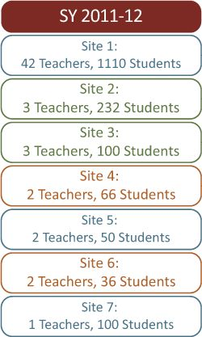
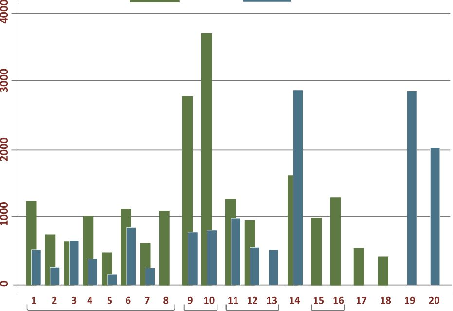
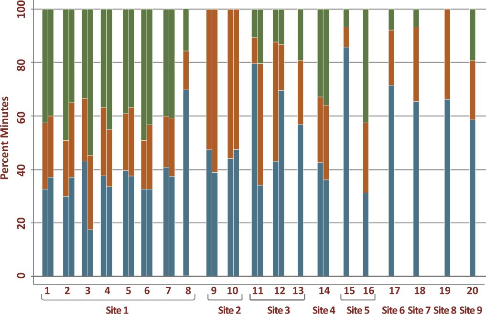
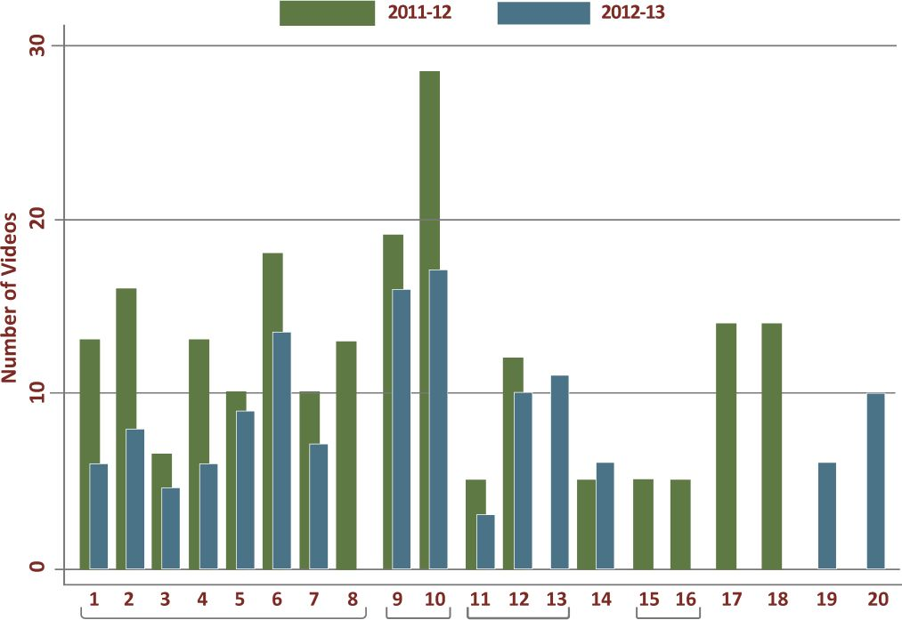
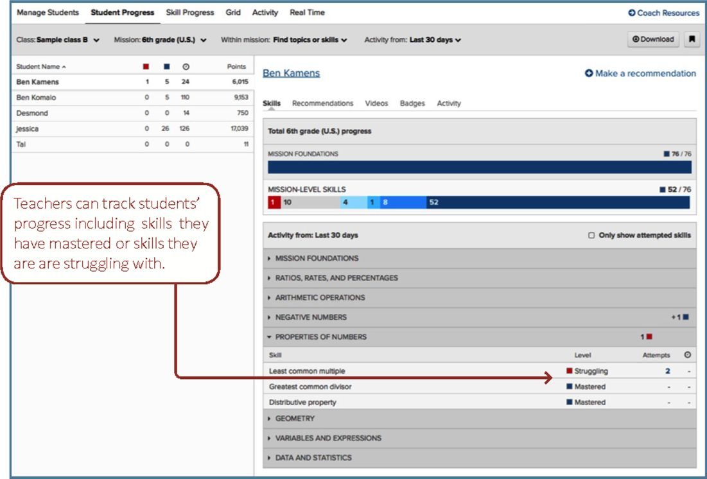
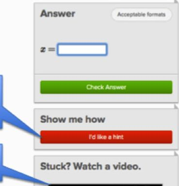

SRI Education
March 2014
Developed by SRI Education with funding from the Bill & Melinda Gates Foundation.
This report is based on research funded by the Bill & Melinda Gates Foundation. The findings and conclusions contained within are those of the authors and do not necessarily reflect positions or policies of the Bill & Melinda Gates Foundation.
Suggested citation:
Murphy, R., Gallagher, L., Krumm, A ., Mislevy, J., & Hafter, A. (2014). Research on the Use of Khan Academy in Schools. Menlo Park, CA: SRI Education.
SRI Education
SRI International 333 Ravenswood Avenue Menlo Park, CA 94025 Phone: 650.859.2000
By:
Robert Murphy Larry Gallagher Andrew Krumm Jessica Mislevy Amy Hafter
March 2014
The Evolution of Khan Academy in Partnership with Schools 4
Emerging Models of Khan Academy Use in Schools 9
Implementation Findings from Khan Academy Pilot Schools 21
Preliminary Findings on the Connection Between Khan Academy Use and
Improved Teacher Practices and Student Outcomes 31
This research was made possible by the collaboration and support of many individuals beyond the SRI Education research team. First, we appreciate the willingness of the participating educational leaders, school administrators, teachers, students, and their parents to cooperate in the research. Their continuous commitment to improving the educational outcomes for all students was inspiring and made this research possible. We also appreciate the support of the Bill & Melinda Gates Foundation and their recognition of the importance of this area of study. Finally, we would like to acknowledge the contributions of the leadership and staff at Khan Academy and their valuable insights and collaboration throughout this study.
What started in 2006 as a set of videos on various math topics that Sal Khan posted on YouTube to help tutor his school-aged cousins across the country, has evolved into the Khan Academy online learning system with more than 10 million unique users per month. Since Khan Academy's appearance on the Web, users have viewed more than 365 million videos and solved over 1.8 billion math problems.
The sheer volume of internet traffic that Khan Academy is generating is evidence of the worldwide hunger for quality online instruction in primary and secondary mathematics, and the value that Khan Academy users perceive in its offering of video-based lectures with opportunities for student practice and reports of student progress. It is also emblematic of the recent proliferation of open educational resources and subscription-based
online math products targeting the K-12 learning community. Teachers around the globe now have access to more online resources like Khan Academy than ever before, and we can be confident that more products are in the pipeline as the entry cost to production declines and the public's access to devices with high-speed bandwidth increases. Educational leaders and teachers are hungry for information on the relative benefits of these products for different types of students, on the factors that support more effective use in schools, and the costs associated with their use relative to other alternatives.
in 2010 Khan Academy received major funding from the Bill & Melinda Gates Foundation and Google to build out its organization and create additional content. Subsequently, Khan Academy began working with a local school district on implementing Khan Academy in a few classrooms, in September 2011
the Bill & Melinda Gates Foundation contracted with SRI International to study the implementation of Khan Academy in a more diverse set of schools and classrooms during school year (SY) 2011-12 and SY 2012-13. The goal of this research was to generate information for school systems, school leaders, and teachers on how Khan Academy, and by implication other similar digital learning tools and resources, could be used to support personalized math learning (i.e., learning that tailors what is taught, when it is taught, and how it is taught to the needs of students working individually and with others). Such guidance is sorely needed at a time when school administrators and teachers are rapidly incorporating digital learning into classroom instruction, but often lack the experience needed to foresee all of the challenges and opportunities entailed in implementing technology for personalized learning.
This implementation report provides formative information and findings that are relevant to educational leaders, teachers, developers, and researchers interested in the ways that Khan Academy and other similar digital instructional resources may be used in formal school settings and the features that may support improved teaching and learning.
Because of the early-stage, emergent nature of both Khan Academy as a school resource and of schools' personalized learning implementation practices, SRI conducted an implementation study rather than an evaluation of Khan Academy's impact. Providing definitive evidence of the effectiveness of Khan Academy use in classrooms is not yet possible. No clearly specified, broadly implemented protocol exists for Khan Academy use in schools; teachers are actively experimenting with different ways to use Khan Academy resources in their
classrooms. For example, during our research, teachers used Khan Academy as an intervention for students who had fallen behind their grade-level peers; as an enrichment activity for advanced students, allowing them to explore topics above their grade level; as an accountability tool allowing close monitoring of student progress on problem sets; and as a highly integrated supplemental practice activity, reinforcing skills recently introduced in the classroom. Moreover, during the 2 years of the study, teachers in some schools significantly altered their use of Khan Academy as they came to learn more about it.
Khan Academy itself also continues to evolve as it adds to its existing content offerings and features to support classroom use. During the study, Khan Academy staff worked closely with school administrators, teachers, and students, as well as the SRI research team, to understand how Khan Academy was being used to support teaching and learning, and gather suggestions for ways to improve the website for use in schools. As a digital resource for supporting math instruction and learning in schools, the current version of Khan Academy differs significantly from the website available to teachers in fall 2011. The content—videos and problem sets—has been expanded to fill in gaps and to ensure coverage of the grade level Common Core mathematics standards (this ongoing effort is expected to provide full coverage of the K-12 Common Core State Standards by fall 2014). System reports have been refined to allow teachers and students to more effectively monitor student progress toward selected goals. The content has been reorganized due to the process of mapping lessons to grade-level Common Core standards. Search features have also been added to facilitate teachers' identification of videos and problem sets appropriate for their grade level, and to help keep students focused on relevant topics.
With the support of the Bill & Melinda Gates Foundation, Khan Academy recruited a variety of California schools to participate in a two-year pilot starting in fall 2011. The schools represented a range of public, independent, and charter schools. In collaboration with Khan Academy, SRI selected 9 of the pilot sites for its implementation research, with the goal of representing differing ways that Khan Academy could be used to support math instruction for a range of student types. Research sites were also selected to represent a range of governance structures—public school districts, charter management organizations (CMOs), and independent schools—as well as school levels—elementary, middle, and high schools. A majority of the schools served students from low-income communities, and several elected to use Khan Academy to support math instruction for their students with the greatest needs. (Appendix B provides a profile for each of the research sites, including details about their goals and implementation model for Khan Academy use.)
All study participants were volunteers, who could drop out of the study at any time and for any reason. Study sites were also given full discretion over how and how often they used Khan Academy in their math instruction; at some sites, individual teachers decided how Khan Academy was used. As a result, the number of years of participation in the implementation research varied by site. Four of the sites were included in the research for both years of the study; the other sites participated for just one year. One public school district was by far the largest of the sites participating in the pilot, with 8 schools and more than 50 teachers participating across the 2 years of the study.
Findings presented in this report are based on data collected from the participating schools during SY 2011-12 and SY 2012-13. To collect information about how Khan Academy was being used and its potential benefits, SRI researchers visited schools, districts, and CMOs; made classroom observations; interviewed organization and school leaders as well as teachers, parents, and students; conducted teacher and student surveys; and analyzed students' user log files over the school year. When appropriate, we present findings from our analysis of student outcomes—scores on standardized achievement tests and attitudes toward and interests in math, from sites where they were available—and examine the association between levels of Khan Academy use and these outcomes.
Research sites varied considerably in how they used Khan Academy during the 2 school years, but all sites used it to support a blended learning model; that is, in conjunction with teacher-led direct instruction.1 In theory, Khan Academy could be used as the core or only curriculum resource for math instruction, with each student working independently. However, with the exception of one site in SY 2012-13, schools and classrooms in the implementation research study did not choose that approach. Instead, Khan Academy was used primarily as a supplemental resource to support teacher-led instruction. Typically, teachers assigned Khan Academy problem sets to give their students practice and immediate feedback on recently learned skills or to fill knowledge gaps. Even though Khan Academy is primarily known for its video library and has been associated with the "flipped"
classroom model (i.e., teachers assign videos on new concepts for students to watch for homework and use class time to extend the video lectures with discussion and interactive activities), teachers participating in the research were more focused on exploring how online, personalized practice opportunities for students could be incorporated into their existing instructional activities. In most cases, when students used the videos, they did so in class to review concepts as they worked through the Khan Academy problem sets. Few teachers used the videos in their lessons to introduce new concepts and skills.
Although most of the variation in Khan Academy use occurred among different sites and schools, we also observed significant variation within schools and even for individual teachers overtime, both within a school year and across school years. Use varied as pilot schools and teachers learned what Khan Academy had to offer and how best to use it to support the kind of teaching and learning they wanted for their students.
In the formal learning environment of schools, the curriculum is governed by grade-level content standards and pacing guides aligned with state testing schedules, and teachers are expected to be the primary source of math instruction. Khan Academy was not initially designed with this type of learning environment in mind, but it has since been built out and continues to evolve, adding features that facilitate classroom use. It should be remembered, however, that the overwhelming majority of Khan Academy's millions of users around the globe are self-initiated learners, both children and adults, who are using Khan Academy outside schools for a variety of purposes; these users rely on Khan Academy, particularly the video tutorials, as a key source of instruction. The number of Khan Academy users within formal school settings, although growing, represents only a very small fraction of the overall user base. Thus, because our report focuses on the impact of Khan Academy on schools as
part of their formal instruction, it does not represent the activities of the broader, informal user population.
A set of factors operating on and within public school systems constrains how the average teacher is likely to use instructional resources like Khan Academy-resources that were designed to support self-directed and self-paced learning. In the public and charter schools participating in the study, curriculum and instruction are shaped largely by grade-level state content standards, state accountability systems, and an age-based student promotion policy. Whereas teachers may be willing and encouraged by school leaders to experiment with self-paced instruction and different resources to supplement their classroom instruction, in this environment most feel compelled to follow pacing guides and deliver the core math instruction themselves to make certain all their students are exposed to (and, they hope, master) the grade-level content standards that will be covered on end-of-the-year tests. Our research found that teacher-led instruction was dominant for the introduction of new math concepts in all but one school site; Khan Academy was used primarily by students to supplement the core instruction, and as a source of focused opportunities to practice newly-learned skills.
Another factor shaping how Khan Academy was used in the pilot schools was classroom technology access, particularly in SY 2011-12. Of the 94% of teachers in the sample whose students used Khan Academy primarily in the classroom during that school year, only one-third indicated that their classrooms had a computer for every student to support one-to-one computing anytime.
More typically, because teachers during this school year shared laptop carts with other teachers, computers were generally available no more than 2 to 3 days per week—a clear constraint on how Khan Academy could be used in those classrooms. By SY 2012-13, more than 80% of the participating teachers, including teachers in the largest site (Site 1), had access to anytime, one-to-one computing in their classrooms.
Key findings of the implementation research are summarized as follows.
• Khan Academy is continuing to fill in gaps and create new content aligned with standards at each grade level. From a formal school curriculum perspective, during the course of the study, content gaps existed in both the videos and the problem sets, particularly in SY 2011-12. Over the research period, Khan Academy developed considerable new content to fill the gaps and continues to do so. Our interviews revealed that teachers of younger students in the pilot (fifth- and sixth-graders) often found Khan Academy problem sets too difficult
for them. In several instances, Khan Academy responded by developing problem sets that were developmental^ appropriate for these younger students. In addition, significant gaps existed in the content for ninth and higher grades, particularly in geometry. Khan Academy has been undertaking a major content development initiative of both videos and problem sets to ensure comprehensive coverage of Common Core State Standards for K-12 math.
• Khan Academy has invested significant resources to help teachers integrate their content with classroom instruction and to improve the website's resources through direct, and sometimes rapid, response to teacher and student feedback. These changes were stimulated by Khan Academy staff's own observations in the field, analysis of user data, and feedback from the schools and the SRI research team. Some of the significant changes made to the website since fall 2011 follow.
— Mapped content to Common Core State Standards and provided search capabilities by standard and grade level. By the second half of SY 2011-12, a teacher was able to identify all available content (videos and problem sets) associated with a particular standard and grade level. Before that time, it had been fairly burdensome for teachers to identify the appropriate Khan Academy content to support a particular unit of instruction.
— Developed "tutorials" for instructional units on important topics supported by a sequence of Khan Academy videos and problem sets. By the
end of SY 2011-12, Khan Academy initiated an effort to organize its videos and problem sets into tutorials. Tutorials (like playlists) are intended to contain a sequence of videos and problem sets that teachers can use or modify to support an instructional unit on an important topic, such as understanding ratios and proportions.
— Created the capability for teachers to recommend content for students to view and work on that directly supports classroom instruction. During the study, many teachers expressed a desire to be able to assign or recommend problem sets for students to complete that covered the same topics they were covering in their lessons. Although some teachers allowed students to select their own topics on Khan Academy and move at their own pace, most teachers preferred to use Khan Academy resources to help students practice skills they had recently covered in class.
— Upgraded teacher reports with simplified, customizable summaries of student data at the class and individual student levels. Teachers can now filter class- and student-level data by the specific problem sets they have assigned as well as by time period.
— Added a goal-setting feature that allows students to add specific videos and problem sets to view and complete as a daily, weekly, or longer-term goal. The active goals appear on the top of every Khan Academy page next to the student's name so that students are aware of the goals they've set. Teachers can use the reporting feature to track each student's progress against the goals students have set.
— Updated teacher and coach resources with information, tips, and guides on how to implement Khan Academy in the classroom.
The information is organized into video-based tutorials to help teachers make better use of the website. The resources also include a set of downloadable curriculum plans developed by other teachers using Khan Academy at different grade levels.
* Use of Khan Academy during the first year of the pilot evolved significantly over the school year. Throughout the year in almost all the sites, classroom use of Khan Academy changed as a result of many factors, including guidance from Khan Academy staff, teachers' insertion of their own instructional goals and preferences, and changes in access to technology. At some of the sites, during the first 6 to 8 weeks of the school year Khan Academy was used to support a primarily exploratory, self-paced, self-directed instructional model disconnected from the curriculum. In many of the sites, as the school year progressed, Khan Academy came to be used with classroom pacing and tighter links to the core curriculum sequence and the content of the teachers' daily lesson presentations. Changes in website features and tools, such as goal setting and making content searchable by Common Core State Standard and grade level, supported teachers in these new
approaches. At the outset of SY 2012-13, Khan Academy use tended to be more integrated with classroom instruction than in the prior school year.
• In most but not all sites, teachers used Khan Academy primarily to supplement their own core instruction. Most teachers used Khan Academy to provide extended practice following their introduction of new concepts and skills. The primary Khan Academy resource used was the problem sets, with videos used at the discretion of students. Few teachers assigned students to watch videos, either inside or outside of school for homework, as a way of introducing a new concept or as a teaching aid.
Overall, the teachers in SRI's survey reported that Khan Academy played the greatest role in supporting their instruction by providing students with practice opportunities (82%) and allowing them to provide small-group instruction to some students while others used the program (67%). Fewer teachers (20%) indicated that Khan Academy played a role in introducing new concepts within a lesson.
* The time students spent working on Khan Academy varied considerably across and within sites and by school year. Use of Khan Academy-viewing of videos and working on problems— ranged from a low of 396 minutes (or 11 minutes per week assuming a 36-week school year) for the median student in Site 1, a public school district in SY 2012-13, to a high of 3,140 minutes of use (or 90 minutes per week) in SY 2011-12 at Site 2. With the exception of Site 2 where Khan Academy use in the first year of the pilot consumed 22% of the time allocated for math instruction, Khan Academy use represented less than 10% of scheduled math instructional time at the pilot sites. Of the time students did spend on Khan Academy, more than 85% was allocated to working on the problem sets.
The high use of Khan Academy in Site 2 in SY 2011-12 relative to the other sites and study years was supported by several factors: (1) anytime access to one-to-one computing in classrooms;
(2) mandated completion of Khan Academy goals with consequences for failure to do so; (3) close teacher monitoring of progress toward goals; (4) a well-planned integration with the core curriculum; and (5) extended instructional blocks (90 minutes dedicated to daily math instruction).
• Few teachers expected their students to use Khan Academy outside the regular school day. Students' use of Khan Academy happened during the regular school day, 8 a.m to 3 p.m. For the median student, use outside of school ranged from a low of a few minutes a week across several schools in the sample to a high of 25 minutes per week in Site 8. Across the 2 years of the study, about one in five teachers participating in the study reported that they assigned Khan Academy work to be completed outside the regular school day on a weekly basis, whereas 45% of teachers never assigned it for homework at all. However, in three of the pilot sites with schools in low-income communities. Site 2 (in SY 2011-12), Site 3 and Site 8, expectations differed. In those schools, students were expected to do whatever it took to complete any Khan Academy work they did not finish in class, including staying after school to use the school computers or using computers in public libraries.
About 50% of teacher survey respondents across the two study years reported they never assigned Khan Academy videos or problem sets for homework given concerns about students' lack of access to computers or reliable Internet connections at home. Student self-reports of home access to computers and the Internet in SY 2012-13 showed that the proportion lacking access to a computer or reliable Internet connectivity varied by school, ranging from 7% in Site 8 to 33% in Site 4.
* Teachers' who reviewed the Khan Academy reports regularly found them useful. Across the 2 years
of the study, slightly more than half the teachers reported reviewing the Khan Academy student performance data at least once a week, with about four in ten teachers reporting they reviewed a report once a month or less or never at all.
Teachers who did use the Khan Academy reports regularly (once a week or more often) reported that they primarily did so to monitor the understanding of different concepts by the whole class and by individual students, and to identify students who required tutorials or small group instruction. In addition, almost eight in ten regular users of the reports indicated that they used them to identify gaps in student learning and to modify their instruction on the basis of student needs.
Among the teachers who reviewed the data reports at least a few times a month, slightly more than half characterized the data as very useful in informing their instruction, with the other teachers finding the student reports somewhat useful. Khan Academy conducted surveys, focus groups, and one-on-one discussions with teachers to understand how teachers thought reports could be made more useful, and made several changes to reports on the basis of that feedback; those changes included enabling teachers to filter reports by topic and skill to enable easier identification of students' progress relative to the curriculum.
* Khan Academy is a free resource for districts and schools—an important factor in leaders' decisions to pilot this resource. Although many aspects of Khan Academy appealed to district, CMO, and school leaders, economy was a significant driver. Given restricted education budgets, education
leaders were seeking cost-effective online instructional resources like Khan Academy to implement their instructional visions.
• One-to-one access to computers in the classroom and extended time allotted for math instruction were two key facilitators of Khan Academy use.
Few classrooms in our study in the first research year (SY 2011-12) had access to one-to-one computing every school day. Teachers in those schools that did have access to anytime one-to-one computing in the classroom were able to have their students use Khan Academy much more extensively and use it more flexibly to support their instruction than those in schools with high student-to-computer ratios.
In addition, teachers with extra or extended time dedicated to math instruction (more than 50 minutes per day) had more opportunities to integrate Khan Academy into their core instructional time than did other teachers. Five of the nine research sites dedicated 80 minutes or more to daily math instruction.
• Lack of alignment of Khan Academy content with core curriculum posed a significant challenge for integrating this learning system into the classroom.
Two-thirds of teachers surveyed across study years reported that a lack of alignment between the Khan Academy resources and their school's curriculum had a moderate to significant negative effect on their ability to use Khan Academy effectively with their students. As reported above, some content gaps existed in both the videos and the problem sets relative to grade-level standards during the first year of the study and to a lesser extent during the second year as well. During these 2 years, Khan Academy developed considerable new content to fill the gaps and plans to have full coverage of the K-12 Common Core standards by fall 2014.
* Students' engagement was high during Khan Academy sessions. Across elementary, middle, and high school levels, a high intensity of engagement was evident during most of our classroom observations. Students in the lower grades in particular reported that they enjoyed their "Khan time," and the teachers we interviewed confirmed this. Overall, 71% of students surveyed reported that they enjoyed using Khan Academy.
Our observations and student and teacher interviews provide plausible, but as yet untested, explanations for this high level of engagement, including:
— Students enjoyed interacting with the hardware (e.g., laptops, notebooks, iPads).
— Some students were motivated by Khan Academy's game-like features—the badges and energy points awarded when they successfully completed problem sets.
— Immediate feedback, hints, and access to videos meant that students using Khan Academy were not stuck for long and could experience success even when the content became challenging.
— Khan Academy instilled in students a sense of ownership and control over their learning that is rare in traditional classroom settings.
• Teachers reported that integrating Khan Academy into their instruction has increased their capacity to support their students in a number of areas. Across the two years of the study, the majority (91%) of teachers indicated that using Khan Academy increased their ability to provide students with opportunities
to practice new concepts and skills they had recently learned in class. Eight in ten teachers also reported that Khan Academy increased their ability to monitor
students' knowledge and ability, thus helping to identify students who were struggling. Among teacher survey respondents, 82% reported that Khan Academy helped them identify students who were ahead of the rest of the class, 82% said it helped them expose advanced students to concepts beyond their grade level, and 65%, including 72% of teachers in schools serving low-income communities, said that Khan Academy increased their ability to help struggling students catch up. Slightly more than half the teachers (56%) reported that using Khan Academy helped them determine what content they needed to reteach or could skip, and 32% of teachers overall and 48% of teachers in schools serving low-income communities reported that Khan Academy helped them move more quickly through the curriculum.
* A majority of teachers were happy with their Khan Academy experience and plan to use Khan Academy with their students in the upcoming school year. Of teachers who used Khan Academy, 86% reported they would recommend it to other teachers, and 89% planned to use Khan Academy with their students during the next school year.
• In a set of exploratory analyses, positive relationships were found between Khan Academy use and better-than-expected achievement and nonachievement outcomes, including level of math anxiety and confidence in one's ability to do math. In exploratory analyses we examined how the time spent on Khan Academy and the number of problem sets completed to proficiency were associated with better than predicted spring test scores and attitudinal measures. We conducted the analyses using student-level data from Site 1 and Site 9. We found a positive and statistically significant relationship between use of Khan Academy (the minutes spent working with the Khan Academy resources and the number of problem
sets successfully completed to proficiency)— and improved student outcomes—better than predicted test scores, lower math anxiety and higher confidence in one's ability to do math. For example, among fifth- and sixth-grade students in Site 1, those with better than predicted California Standards Test (CST) scores had spent, on average, 12 hours more on Khan Academy in grade 5 and 3 hours more in grade 6 than their peers with lower CST scores than would have been predicted based on their prior math achievement. The students with higher than predicted CST scores also completed 26 additional Khan Academy problem sets in grade 5 (approximately 39% more) and 20 additional problem sets in grade 6 (approximately 22% more) compared to peers with lower than expected achievement gains. The pattern of relationship between Khan Academy use and spring test scores was similar for Site 9, but was only statistically significant for some grade levels.
We also found a positive relationship between the number of Khan Academy problem sets completed and a set of nonachievement, attitudinal outcomes. These analyses were performed using student data from fifth- and sixth-grade classrooms in Site 1 during SY 2012-13, the only year these attitudinal measures were collected. Students who successfully completed between 10% and 20% more problems sets than did other students reported lower than expected anxiety about doing math in the spring based on their reports in the fall, and higher than expected beliefs about their own math ability (math self-concept), and confidence in their ability to learn math even when concepts become difficult (academic efficacy). The same positive associations held for time spent working on Khan Academy but the relationship was statistically significant only for math self-concept and academic efficacy. Similarly, students in Site 1 who spent between an average of one and a half to three hours more on Khan Academy across SY 2012-13 had higher than expected self-reports of their math self-concept and academic efficacy.
These analyses are exploratory, and the results are preliminary; they cannot be used to make definitive claims about the effectiveness of Khan Academy resources. Other plausible explanations could account for these associations that the analyses did not consider. Although the results are not definitive, they do suggest associations that are worthy of future investigation using more rigorous designs (e.g., random assignment experiments) to better understand the potential efficacy of the use of Khan Academy in the classroom.
• Teachers who used Khan Academy with their students believed it had a positive impact on student learning. In responding to SRI's teacher survey, over the 2 years of the study, roughly 85% of teachers reported that they believed Khan Academy had made a positive impact (somewhat or strong) on students' learning and understanding of the material overall, with 42% reporting a strong impact. Of the 87% of teachers who believed Khan Academy had a positive impact on students' ability to work and learn independently, 38% reported a strong impact. In terms of specific skills or areas, more than eight in ten of the surveyed teachers (83%) felt that Khan Academy had a positive impact (somewhat or strong) on students' acquisition of procedural skills (with 50% reporting a strong impact). A strong majority of teachers (80%) also believed Khan Academy had a positive impact on students' conceptual math understanding (while 24% described it as a strong impact). Teachers credited Khan Academy with enabling students to learn new math concepts beyond their grade level (91% overall, with 41% reporting a strong impact). Two-thirds of the surveyed teachers believed that Khan Academy had a positive impact on their students' problem-solving skills and ability to apply mathematics in context, with one in ten reporting a strong impact in these two areas.
* When teachers were asked in the survey about the relative benefits of Khan Academy for students with different levels of prior academic performance, teachers' perceptions of Khan Academy's effectiveness varied. Across the two years of the study, most of teachers described Khan Academy as at least somewhat effective for students regardless of math ability level. However, teachers described Khan Academy as most effective in meeting the learning needs of students whose academic work was ahead of that of most students their age, with 74% of teachers indicating the program was very effective for this group. Khan Academy was considered very effective in meeting the learning needs of students whose academic work was at the expected level for their age by 43% of teachers. Just 25% of teachers reported that Khan Academy was very effective for meeting the learning needs of students whose academic work was behind most students their age; an additional 47% reported it as somewhat effective for these students. These trends were consistent across study year.
• Some students indicated positive changes in their feelings toward math since they had started using Khan Academy. Across the 2 years of the study,
32% of students agreed they liked math more since they started using Khan Academy. Additionally, 45% of students indicated they were able to learn new things about math on their own, without the help of their teacher.
On the basis of the research conducted across SY 2011-12 and SY 2012-13, it is premature to judge the effectiveness of Khan Academy as a school-based instructional resource or intervention. Khan Academy use varied significantly within and across sites during the school year. Use models changed overtime, and different sites had different goals and expectations for teachers' use of Khan Academy to support their math instruction. Several sites specifically used Khan Academy to support struggling math learners. Other sites used Khan Academy purely to supplement the core instruction and allowed students to self-direct their use of it. Yet other sites tightly linked students' Khan Academy use to the weekly or upcoming lessons.
To understand the potential efficacy of Khan Academy, we must first understand the local context of its use (including access to technology, organization of instructional time, and curricular constraints), the role Khan Academy plays in math instruction, and the school's and teacher's goals for its use. We also must acknowledge that, for all the schools participating in the pilot, this was their first attempt to integrate a digital resource designed for personalized learning into their instructional system.
No single model of Khan Academy use was implemented across sites. Teachers at most sites were given total discretion over how to implement it in their classrooms. Because Khan Academy was not a stand-alone curriculum, course, or self-contained program of study over the duration of our analysis, all teachers spent time exploring how best to use the resources to support their instruction; integrate Khan Academy time into the instructional day; and determine how different types of students responded to the demands of self-directed learning and the supports students needed to succeed. Some teachers addressed these issues in more depth and perhaps
more successfully than did others. As a group, however, almost all the teachers were satisfied with their first experience with Khan Academy and planned to use it in the future.
As more and more schools and teachers experiment with different ways to use Khan Academy resources to support instruction, and as Khan Academy evolves to better support classroom instruction and student learning, still more models are likely to emerge. To measure the impact that Khan Academy can have on schools' ability to improve all students' math learning, each well-specified implementation model should be studied at scale using a rigorous evaluation design.
Preliminary findings reported here suggest that it would be worthwhile also to conduct research on Khan Academy's impact on nonachievement outcomes. In addition to examining effects on attitudes toward mathematics and oneself as a math learner, the extent to which students' interactions with a self-directed learning environment like Khan Academy foster key 21st century learning skills is worthy of study. Future research should include measures of student outcomes such as digital literacy, resourceful use of peers and online learning resources, time management, and personal accountability—life skills that are critical for success in higher education and beyond.
Finally, although this implementation study provides a start, there is more to learn about the supports teachers need for successfully integrating instructional resources like Khan Academy into their daily instruction. We have found that teachers want content that is curated, that is searchable by grade level and content standard, and that can be assigned to students to support their classroom lessons. Teachers also need easily accessible and easily interpreted information from the online system to monitor classroom and individual student performance. But particular tools and practices for fulfilling these needs still need to be tested empirically.
Challenges related to specific school environments as well as the fundamental nature of formal education shape how schools use Khan Academy. Challenges include accountability pressures, resistance to changing traditional teacher roles, the structure of the school day, and limited access to technology. At the same time, teachers and school leaders are attracted to Khan Academy because it is available for free, offers a flexible modular set of resources, engages students, provides immediate feedback, maintains detailed records of student progress, and offers opportunities for students to direct their own learning.
The Khan Academy pilot showed that schools serving diverse student populations can make use of Khan Academy as part of their mathematics instruction and that they find value in doing so. It also demonstrated how a technology provider can collaborate with schools and independent researchers to obtain and respond to feedback to execute rapid cycles of improvement of its digital education offerings. The new features and changes to existing ones that Khan Academy implemented to meet the needs of students and teachers in math classrooms resulted both in an improved product and in new understandings of how personalized learning can be integrated into classroom instruction.
As teachers, school leaders, and education policymakers seek to transform classroom teaching and learning in ways that make them more personalized, engaging, and effective, many educators are looking to technology as the key to bringing their visions to fruition, it is hardly surprising that the Khan Academy, a set of internet-based mathematics learning resources and tools that attracts millions of users per month and is available free of charge, would interest schools.
Khan Academy's roots differ markedly from those of the typical technology product for the K-12 education market. The Khan Academy developed out of Sal Khan's efforts to tutor young relatives in aspects of mathematics they found difficult. The short videos he made showing his problem solutions on a blackboard with a voiceover explaining each step appealed to students and others who wanted to brush up
on some aspects of mathematics in the privacy of their homes. When individual teachers and schools considered using Khan Academy, it was not at all clear that the content and tools designed for seif-initiated, independent learning would be a good match for typical math classes. Khan Academy resources were developed for self-paced use tailored to an individual's constellation of skill proficiencies and weaknesses and without reference to grade-level content standards. Typical classrooms focus on content specified for the class's grade level and use teacher-led, whole-class or "lockstep" pacing. Just how Khan Academy resources could be useful in classrooms—and the changes needed in those resources or in classroom practices when the two were brought together—were unknown when Khan Academy first began working on a trial basis with a local school district in 2010.
At the same time, the Bill & Melinda Gates Foundation was making investments in digital content and tools for personalizing learning and enhancing student outcomes. The foundation wanted to test the idea that digital learning resources like Khan Academy's—that address the needs and gaps of each individual student, provide engaging learning content, and give students and teachers detailed information about learning progress— could improve outcomes for students.
With support from the foundation, in fall 2011 Khan Academy began a two-year formal pilot program in a dozen sites in California school districts, charter schools, and independent schools serving diverse student populations. At the same time, the foundation contracted with the independent research organization SRI International (SRI) to study the implementation of Khan Academy resources and tools in those schools.
The goal of this research was to generate information for school systems, school leaders, and teachers on how Khan Academy, and by implication other similar digital learning tools and resources, could be used to support personalized math learning (i.e., learning that tailors what is taught, when it is taught, and how it is taught to the needs of students working individually and with others). Such guidance is sorely needed at a time when school administrators and teachers are rapidly incorporating digital learning into classroom instruction, but often lack the experience base needed to foresee all of the challenges and opportunities entailed in implementing technology for personalized learning.
This implementation report provides formative information and findings on the use of Khan Academy in nine sites in California during their first or second year of implementation. The report also provides preliminary evidence about the potential link between use of Khan Academy and math achievement and a set of important nonachievement outcomes. SRI prepared this report to inform education leaders, teachers, developers, researchers, and others interested in the ways that Khan Academy, and other similar digital instructional resources, can be used in formal school settings.
The implementation efforts and research described here occurred at a time when the Khan Academy resources and tools were undergoing rapid evolution, in many cases in response to the expressed needs of pilot teachers and students. Khan Academy staff worked closely with school administrators, teachers, and students and with the SRI research team to understand how their content and tools were being used and to determine the enhancements that would make them more useful and easier to implement in classrooms.
The various schools and teachers participating in this pilot work implemented Khan Academy with different goals in mind. Some teachers regarded Khan Academy as an intervention for students who had fallen behind their grade-level peers; others treated it as an enrichment activity for advanced students. Some schools were attracted to features of Khan Academy that supported accountability, allowing teachers to closely monitor student progress on problem sets; others wanted to use it for intensive practice on specific math skills that classroom teachers had recently introduced. Moreover, during the course of the study, some teachers and schools made significant changes in how they used Khan Academy as they learned more about it.
As a digital resource for supporting math instruction and learning in schools, the current version of Khan Academy is significantly different from the resources and tools available to teachers in the fall of 2011.
Its content—videos and problem sets—has been expanded to fill in gaps and to ensure coverage of the grade-level Common Core mathematics standards (this is an ongoing effort, with full coverage of the K-12 Common Core standards expected by fall 2014). Progress reports were refined to allow teachers and students to more effectively monitor student progress toward selected goals. And Khan Academy reorganized its content, mapping videos and problem sets to align with grade-level Common Core standards, and added search features to allow teachers to more easily identify content appropriate for their grade level and current instructional focus.
Because of the early-stage, emergent nature of both Khan Academy as a school resource and the schools' personalized learning implementation practices, SRI conducted an implementation study rather than an evaluation of Khan Academy's impact. An experimental test of an intervention's impact (a randomized control trial) would have required a clearly specified treatment, including a protocol for its enactment. Because neither the Khan Academy resources and tools nor the way in which they were used in classrooms was stable across the various study sites and across the 24 months of this work, it was too soon to attempt a rigorous evaluation of the impacts of using Khan Academy. Rather, our implementation study focused on documenting use models and associated implementation challenges and strategies in ways that could inform future decisions about whether and how to adopt Khan Academy for classroom use.
SRI researchers did collect math achievement data and nonachievement, attitudinal measures for students in classrooms using Khan Academy as part of this pilot effort and examined in a small sample of sites the relationships between these outcomes and detailed Khan Academy use data collected automatically as students worked online. We present these findings, but with the reminder that these analyses are correlational and do not constitute definitive evidence with respect to Khan Academy impacts. Students' outcomes relative to expectation are affected by the totality of their educational experiences, and across all but one of the sites, Khan Academy was only one part of a much larger system of curriculum and instruction rather than the sole—or even the primary—mechanism for math learning.
Despite these limitations, we realize that educators considering adoption of Khan Academy are eager to see student outcomes, and would prefer having access to preliminary, inconclusive data to flying blind. We urge readers making inferences about how Khan Academy may have contributed to
student outcomes at the study sites to keep in mind each site's use model and purposes, as well as other contextual features. By considering student outcomes in context, readers can gain initial insights into the range of outcomes that might be expected for students using Khan Academy for different purposes and in different ways.
The remainder of this report consists of four sections. First, we describe how Khan Academy tools and resources evolved in ways that made them easier for teachers to use and more valuable for classroom instruction. This section describes the extensive communication between Khan Academy and school staff, and the rapid development of Khan Academy features and content in response to teacher suggestions and requests. The next section describes the pilot test samples for school year (SY) 2011-12 and SY 2012-13 and the variety of use models observed in these different study sites. This section is followed by a description of the findings of SRI's analysis of the extent to which various sites had their students use Khan Academy and the factors correlated with differences in the amount and pattern of Khan Academy use. Next, we present a section describing analyses of the relationship between the extent of Khan Academy use and student achievement gains in math, and improvements in a set of important nonachievement outcomes. The final section draws implications from the descriptive analyses for future efforts to design, evaluate, and implement similar blended learning approaches. A set of appendices present details about the Khan Academy interface, pilot site use models, our data collection procedures, and data processing and analysis.
A Brief History of Khan Academy
The story of Khan Academy's beginnings has received extensive coverage in the media and elsewhere. In 2006, Sal Khan, while still working as an analyst for a hedge fund on the East Coast, started creating and posting a set of 8- to 10-minute long math videos on YouTube to provide remote tutoring to a group of his school-aged cousins living in New Orleans. Because the videos resided on YouTube, they were available to anyone with an Internet connection and, almost overnight, tens of thousands of people around the world searching for online resources to teach and learn math began to discover them and leave comments, thanking Sal for his efforts and describing how Khan Academy helped them achieve their academic goals. By 2009, Sal had dedicated himself full-time to expandingthe Khan Academy
video collection, and by 2010, with nearly a million unique visitors, the nonprofit Khan Academy organization was formed with funding from private benefactors, Google, and the Bill & Melinda Gates Foundation. With its mission to provide "a free world-class education for anyone anywhere," the new organization got to work on expanding its resources to include not only videos, but also practice problem sets; progress reports for teachers and students; gaming mechanics (points and badges); and content other than math, including art history, macroeconomics, and computer programming.
Although the YouTube videos are the best known aspect of Khan Academy, we found that teachers and students in the classrooms in our sample were attracted to other aspects of the system. These included problem sets that helped students practice newly learned skills and that provided them with immediate feedback and hints when needed;
reporting features that helped students monitor their progress and aided teachers in monitoring the progress of the whole class and in identifying individual students who were struggling; and game mechanics—the ability to collect "energy" points and badges as a student completed problem sets— providing extrinsic motivation, rewarding students for their progress and efforts, and spurring them to get to the next level. Appendix A provides examples of problem sets, reports, and gaming mechanics currently available on the Khan Academy website.
The experience for teachers and students changed in many ways over the course of the implementation study as Khan Academy resources expanded and new features were added. Working in close collaboration with school administrators, teachers, and students in the pilot schools, as well as with members of the SRI research team, Khan Academy made significant changes to its platform, content, and the organization of content in efforts to make its resources a more effective tool for classroom use.
Starting in fall 2011, Khan Academy concentrated on building out its math content, mostly by expanding the coverage of its problem sets but also by adding new videos to close identified gaps in curriculum coverage. By the end of SY 2011-12, more than 3,000 YouTube videos and 350 problem sets targeting a specific math concept were available for teachers and students. (At the start of SY 2011-12, approximately 2,500 videos and 130 problem sets had been available.) Despite the tripling of the problem sets available between September and June, significant gaps still existed in the Khan Academy exercise topics relative to the Common Core State Standards during SY 2011-12. In some cases, those gaps limited
teachers' ability to assign Khan Academy problem sets linked to the curriculum topics they were covering. During SY 2012-13, approximately 400 math videos and 115 problem sets were added to the Khan Academy site.
Khan Academy continued to identify gaps in the math content, and started preparing in spring 2013 for an intensive effort to provide coverage across the Common Core State Standards. Khan Academy hired a team of mathematicians, curriculum specialists, teachers, and math tutors to support this effort.
By SY 2014-15, Khan Academy expects to have comprehensive, Common Core-aligned content across all K-12 grades available for users.
Table 1 summarizes significant changes to the Khan Academy website made since fall 2011. The changes are organized by the issue the changes addressed.
Table 1. Summary of Major Changes Made to Khan Academy Website During the Study
Teachers and students needed efficient ways to find relevant videos and problem sets that were aligned to the curriculum.
Created new videos and problem sets specifically tailored to each grade level so that ^ teachers and students could identify the appropriate content for their grade level.
Mapped the content (videos and problem sets) to the Common Core State * Standards by grade level.* That enabled teachers to identify all available content associated with a particular standard and grade level.
Added search capability so students could quickly find videos and problem sets ^ by topic.
Created a problem set browser that allowed teachers to easily find problem sets aligned with their curriculum using keyword search.
Reorganized the math content into tutorials, which provided videos and problem sets in a logical sequence for each topic. An example is Subtraction with Borrowing **
Teachers wanted to be able to assign Khan Academy problem sets to students and find easier ways to monitor students' completion of the assignments.
^ Created capability for teachers to recommend content for students to view and work on.
S Added a goal-setting feature that allowed students to add specific videos and/ or problem sets to view and complete as a daily, weekly, or longer-term goal. The active goals appear on the top of every Khan Academy page next to the student's name. Teachers can track their students' progress against these goals when accessing the teacher view of the tool.
Y Upgraded teacher reports with simplified, customizable summaries of student data at the class and individual student level. Teachers now can filter class- and student-level data by the specific problem sets assigned as well as by time periods.***
Teachers needed more supports for effective use in the classroom, including examples of how other teachers are using Khan Academy in classrooms and more efficient ways to enroll students on the site
Implemented a new sign-on process allowing for bulk enrollment along with step-by-step guides.
Y Updated teacher resources with information, tips, and guides on different ways to use Khan Academy in a classroom. Resources were organized into video-based tutorials. The resources also included a set of downloadable curriculum plans developed by teachers using Khan Academy for different grade levels to demonstrate how different teachers are integrating Khan Academy into their curriculum. ****
Teachers' wanted to improve students' use of the videos as a resource and source of review when working on Khan Academy problem sets.
y^ Located the related videos on the same page so that students working on problem sets could more easily locate and review the video content if needed.
^ Added the ability to fast-forward through videos during playback to help students locate the information they needed more efficiently.
*To view Common Core mapping, go to https://www.khanacademv.org/commoncore/map.
**To see an example of the Subtraction with Borrowing tutorial, go to https://www.khanacademv.org/math/arithmetic/addition-subtraction/sub borrowing/v/basic-regrouping-or-borrowing-when-subtracting-three-digit-numbers.
***For an interactive demo of progress reports available to teachers and coaches go to https://www.khanacademv.org/coach/demo.
****For a |jst 0f avaj|ab|e curriculum plans go to https://www.khanacademv.Org/coach-res/virtual-teacher-workshop/planning-vour-implementation/a/ integrating-khan-academv-into-vour-curriculum.
Students earn points for successfully completing single-skill practice sessions and challenges on their path to mastery. As a motivational tool, students are provided with a visual representation of their progress. An array of small blocks appears in the top corner of the students' dashboard page, with each block representing a single skill for which students will have to demonstrate mastery to complete the grade-level mission. As students complete practice problems and challenge problem sets successfully, the boxes are colored in, with the shade darkening with each successful step made towards mastery.*
In Summer 2013, Khan Academy released a major redesign of its website motivated by the desire to help students stay focused on relevant content and retain what they have learned.
In July 2013, Khan Academy launched a major redesign of its website with the release of its grade-level "missions" and a new "learning flow" and "learning dashboard." The redesign was introduced to help students, particularly those who used Khan Academy independently of the classroom, focus on working in the appropriate content area and to retain what they were learning. From their dashboard, students can select a mission, and while in the mission, have access only to the videos and problem sets mapped to a single grade level (e.g., the grade six mission) or course content (Algebra I) along with videos and problem sets associated with any prerequisite skills.
* Fora demonstration of students' navigating through a mission see https://www.khanacademv.org/coach-resA/irtual-teacher-workshop/ planning-vour-implementation/a/missions-focusing-students-on-meaningful-content
On the basis of student performance on an initial pretest, established learning progressions, and performance of similar students, the site recommends the next set of skills the user should work on (teachers may override the recommendation with their own selections). Students are given opportunities to view videos and practice a set of related skills in a topic area and, 16 hours after successfully practicing these skills, are given another opportunity to complete a "challenge" consisting of approximately 8 problems— one for each subskill they have practiced—to test what knowledge they have retained. A student receives an indication that he or she has "mastered" a specific skill only after successfully completing the relevant problems embedded in 3 such challenges, each separated by a minimum of 16 hours. After some more time has passed, as an ongoing check of knowledge retention, subsequent challenges will continue to include problems on topics for which students have already achieved mastery.
Khan Academy supported schools in a variety of ways during the course of the study. Throughout each study year, members of the Khan Academy implementation team provided sites with ongoing support both in-person and by phone and email. Teachers also had access to Khan Academy's online teacher resources, including video guides to the website's features and case studies of different models of use of Khan Academy by teachers around the country.2
Khan Academy assigned a member of its implementation team to support each research site by briefing teachers on new website features and by indicating how other teachers were using the resources to address classroom needs. Khan Academy staff worked closely with teachers to learn about their needs and the needs of their students. Khan Academy staff also used this time in the field to observe how teachers were using Khan Academy, and to solicit concerns and suggestions for refinements, including improvements in content coverage.
During the first semester of SY 2011-12, Khan Academy implementation team members made regular scheduled visits to all sites, some on a weekly basis, and were available to teachers via e-mail and phone. These visits and communications continued into the second semester for a core group of sites, including Sites 1-4. The other sites received significantly fewer face-to-face visits from Khan Academy staff during the second semester, with most questions and communications handled through e-mail and phone.
In SY 2012-13, the Khan Academy school implementation team continued to support the sites participating in the research but to a much lesser extent than in SY 2011-12. Each site was visited 5 to 6 times during the school year by a dedicated member of the implementation team who worked with individual teachers, received their feedback, and informed them about upcoming or just released upgrades to the content and the website.
During SY 2011-12, Site 1, the largest teacher and student sample in the study, coordinated and provided four additional professional development days across the year for its school administrators and for all fifth- through seventh-grade math teachers and a few eighth-grade teachers who volunteered to pilot Khan Academy in their classrooms. Approximately 50 teachers participated in each session, which focused on the use of Khan Academy and other online resources to support the district's vision for personalized learning and for preparation of students for the information society. The sessions included presentations by Khan Academy staff. During the same school year, Khan Academy held two professional development events for teachers in the other sites (one in the summer and the other in the fall). Approximately 25 teachers attended each event. The events focused on best practices for integrating Khan Academy into the typical math curriculum and on using Khan Academy to differentiate instruction.
In this section we begin with a description of the research sites that participated in the two years of the study. We also provide detailed descriptions of several use cases to show the variety of ways that teachers were using Khan Academy to support their instruction.
Khan Academy recruited a variety of California schools to participate in a two-year pilot starting in fall 2011. Of these pilot sites, nine were selected for inclusion in this research for one or both study years.3 The research team selected the study sites in collaboration with Khan Academy to represent a range of ways that Khan Academy was being used for math instruction
support for different types of students. Pilot school sites were also selected to represent a range of governance structures and school types—public school districts, charter management organizations (CMOs), and independent schools; and elementary, middle, and high schools. A majority of the sites served students from low-income communities, and several were using Khan Academy specifically to support the math instruction for students with the greatest needs.
Seven research sites were included in the first year of the study (Sites 1-7) and six in the second (Sites 1-4, 8, and 9). For the second year of data collection, SY 2012-13, the research included four of the seven first-year sites (Sites 1-4) that had demonstrated a unique approach to classroom use of Khan Academy and from which the
TOTAL
63 Teachers, 1936 Students
60 Teachers, 2199 Students
Figure 1. Participating Sites and School Structures
|
SY 2012-13 L u | ||
|
r |
Site 1: | |
|
i |
46 Teachers, 1061 Students |
J |
|
r |
Site 2: | |
|
i |
5 Teachers, 400 Students |
J |
|
r |
Site 3: | |
|
i |
6 Teachers, 337 Students |
J |
|
r |
Site 4: | |
|
i |
2 Teachers, 69 Students |
J |
r Site 8:
^ 2 Teachers, 139 Students J
( Site 9: '
^ 2 Teachers, 240 Students J
research team had collected data on student learning.4 In addition, we invited two more schools (Sites 8 and 9) that had started using Khan Academy the year before, but outside of the formal pilot, to participate in the research in SY 2012-13; Khan Academy indicated that these two sites had been making considerable efforts to use Khan Academy to improve instruction and learning. Figure 1 summarizes characteristics of the participating sites including the number of schools, teachers, and students participating in the research in each year of the study. Table 2 shows the demographic characteristics of the students served by each study site.
Appendix B provides a profile for each of the research sites, showing their years of participation in the research, the student communities they served, and details about their goals and implementation model for Khan Academy use.
Teachers can use Khan Academy in classrooms in multiple ways, including as:
• A personalized learning tool—Khan Academy can be used at the beginning or end of class or after school to differentiate instruction and enable students to learn and practice content relevant to their needs and at their own pace, whether they are below, at, or above grade level.
• A supplemental resource—Teachers can assign a common set of Khan Academy problems related to the curriculum for students to practice in class or at home, and teachers can check students' completion and comprehension through Khan Academy's real-time reports. Students can use Khan Academy videos to review content as needed.
• A flipped classroom model—Teachers can assign videos on new concepts for students to watch at home and then use class time to extend the video lectures through discussion and interactive activities, checking for understanding and addressing student questions, or working with individual or small groups of students as the other students work through related Khan Academy problem sets. In this model, videos are used to teach new content in place of teacher presentations.
• A primary instructional resource—Khan Academy videos and problem sets can be used as the primary learning resource both in class and at home. Videos are used to present new content and problem sets used to provide practice.
Considerable variation in Khan Academy use occurred across sites during the two years of the implementation study, but all sites used it to support
a blended learning model: that is, in conjunction with teacher-led direct instruction.5 In theory,
Khan Academy could be used as the core or only curriculum resource for math instruction with each student working independently. With the exception of one site in one of the two years (Site 2), schools and classrooms in the pilot study did not choose to use Khan Academy that way or were unable to use it that way for a number of reasons, including gaps in the content coverage at some grade levels and lack of regular access to computers in the classroom, particularly in Site 1 during SY 2011-12. Instead, Khan Academy was used as a supplemental resource to reinforce teacher presentations, allow for additional practice, or serve as a separate intervention or enrichment activity. Even though Khan Academy is primarily known for its video library and has been
associated with the flipped classroom model, teachers participating in the research were more focused on exploring how online, personalized practice opportunities for students could be incorporated into their existing instructional activities. In most cases, when students used the videos, they did so in class to review concepts as they worked through the Khan Academy problem sets. Few teachers used the videos in their lessons to introduce new concepts and skills.
Sites' implementation practices varied along several critical dimensions (see Table 3), including how extensively Khan Academy was integrated with core instruction, the students who were targeted, whether students used Khan Academy independently or collaboratively, students' access to technology, and the degree to which pacing was individualized. For example, some teachers used Khan Academy to free themselves to work directly with a small group of students who were
struggling while other students worked independently on Khan Academy. Several schools used Khan Academy solely as an intervention to support struggling math learners, with little or no use of it by other students. In two sites, teachers made significant efforts to integrate Khan Academy as a primary instructional activity within the daily core instruction. And during SY 2012-13, one site experimented with a self-paced, competency-based model, using Khan Academy content as the primary instructional resource.
Table 3. Features of Khan Academy Implementation at the Research Sites
|
Implementation Features | ||||||
|
Research Site |
Integrated into lesson or separate from lesson |
Used as an intervention |
Peer-to-peer interactions encouraged |
Required use outside school day |
Classroom vs. individualized pacing |
Small group instruction and Khan Academy use |
|
i |
Both |
Middle school only |
Some classrooms |
No |
Both |
Varied by teacher |
|
2 (SY 2011-12) |
Both |
No |
Yes |
Yes |
Both |
Yes |
|
2 (SY 2012-13) |
Integrated |
No |
Yes |
No |
Individualized |
Yes |
|
3 |
Both |
Yes (1 of 3 schools) |
Some classrooms |
Yes |
Both |
Yes |
|
4 |
Both |
No |
Yes |
No |
Both |
Yes |
|
5 |
Separate |
Middle school only |
Elementary school only |
No |
Both |
Elementary school only |
|
6 |
Separate |
Yes |
No |
No |
Both |
Yes |
|
7 |
Separate |
No |
No |
Yes (after-school program) |
Individualized |
Yes |
|
8 |
9th grade (both), 10th grade (integrated) |
Yes(9th grade, algebra readiness) |
Yes |
No |
Both (algebra readiness), classroom (algebra 1) |
Yes (algebra readiness and learning lab) |
|
9 |
Both |
Yes (seventh/ eighth grade) |
No |
No |
Both |
Yes (rotation model) |
Although most of the variation in Khan Academy use occurred among different sites and schools as illustrated in Table 3, we also observed significant variation within schools and even within a single teacher's class overtime as teachers learned what Khan Academy had to offer and how best to use it to support the kind of teaching and learning they wanted for their students.
The first 2 months of SY 2011-12 were used to orient teachers and students about Khan Academy, its features, and available resources. Khan Academy staff guided teachers during the initial face-to-face professional development sessions and Khan Academy implementation team members conducted follow-up visits to enable students to start using Khan Academy as soon as possible, letting students explore the resources and features in a self-directed, self-paced manner with little or no teacher direction. Khan Academy staff also recommended that students begin their exploration of Khan Academy content by starting with simple arithmetic and then challenging themselves to see how far they could progress as the content became increasingly more difficult. Many of the teachers across the sites implemented this recommendation during the first 4 to 6 weeks of the school year. Many students moved quickly through topics they had mastered in previous grades before their pace slowed as they encountered content at their current grade level and above. A few students did manage to work successfully through all the problem sets then available by the start of winter break.
This introductory period also allowed teachers to explore the features of the website, particularly the Khan Academy reports of student progress. While students were becoming familiar with the website and filling in some gaps in basic skills, teachers were able to identify those who were struggling with below-grade-level content and thus were candidates for remedial support. Many teachers also used this time to explore the Khan Academy experience from the student's perspective by working through some (and in a few cases nearly all) of the videos and problem sets themselves.
After this introductory period, many teachers began to try to integrate Khan Academy into their lessons
following an October professional development session that demonstrated several models for using Khan Academy to support classroom instruction.
As a result, compared with its use during the first 2 months of SY 2011-12, from October 2011 onward Khan Academy became more integrated with and connected to the curriculum and daily lessons in the participating classrooms. During SY 2012-13, most teachers continued to experiment with different ways to use Khan Academy with their students, but most favored using it to support and reinforce what they taught in the daily lesson.
This section presents examples from four research sites to illustrate some of the different models that emerged over the course of the research. Each model reflects the intentions and instructional mission of its parent site and schools. While Khan Academy continues to evolve, develop new features, and refine and expand its content, we believe that these preliminary use models represent how teachers are likely to continue to use digital resources like Khan Academy to support instruction in the classroom.
Site 2 is a charter management organization operating six small high schools in California. In SY 2012-13, two of the schools, collocated in an urban center, piloted a self-directed, competency-based instructional model for their math program supported with Khan Academy online math resources. Of the schools' students,
45% qualified for reduced-price lunches. This profile describes the ninth- and tenth-grade mathematics courses in these schools in SY 2012-13 where as many as 200 students assembled for a daily 2-hour block of math instruction.
The Site 2 schools seek to prepare students for college by having students assume more responsibility for their self-directed learning. Believing that noncognitive factors such as grit and perseverance are critical to students' higher education success, these schools hope to develop students who can selfadvocate for their learning, establish learning goals based on what they want to achieve, and persevere to achieve those goals. The schools' new math program was thus designed to support students' simultaneous development of content knowledge, academic skills, and critical noncognitive skills.
The model evolved over the school year; by spring, the schools' daily routine entailed the 2-hour math block divided into two 1-hour learning sections: one student-directed and one teacher-directed. For 1 hour, half the students met in a large room and engaged in self-directed, self-paced math instruction with little or no direct instruction from teachers—what the school called "Personalized Learning Time." Teachers were available to answer questions, and students were encouraged to seek help from peers; for the most part, however, students worked independently guided by "playlists," (curated digital instructional resources, including Khan Academy videos and problem sets, online textbooks, and simulations, accessed through the school's learning management system). All students had access to laptop computers and, progressing at their own pace, spent most of the hour interacting with the digital resources to learn the topics in the curriculum sequence.
At the start of the school year, students were assigned topics and corresponding playlists appropriate for their proficiency level, determined by performance on an online standardized test. Students progressed at their own pace through the rest of the curriculum. When they felt they were ready to prove mastery of a concept or skill in a playlist, students took an online 5-item test proctored by a "learning coach." If they passed the test by answering 4 of the 5 questions correctly, they moved on to the next playlist and topic in the sequence.
To learn the material students could use as many playlist resources as they needed and could also enlist nonplaylist resources, including other online resources and their peers. Khan Academy videos and problem sets were the primary resources listed across playlists, and our observations and interviews indicated they were the most widely used of the instructional resources, the problem sets in particular.
Time was set aside during self-directed work time for students to identify their learning goals and plan what they needed to do to meet them, as well as to reflect on their progress toward those goals. Students spent the first 10 minutes of each self-directed session planning howto use their class time and identifying which digital or other resources they needed to meet their specific objectives for that day. After they finished their work, they spent 10 minutes reflecting on what they had learned, including writing about that day's learning experience, completing a survey, or otherwise self-evaluating their progress. By the second semester, students who were not making adequate progress were required to fill out forms that described their step-by-step plans for catching up.
During Personalized Learning Time, students, although working independently, had access to two teachers or adult volunteers with math backgrounds who answered students' work-related questions and provided tutoring as needed. Students were also encouraged to ask their peers for help and many did so. In general, the frequency of student conversations during the personalized learning time was noticeably greater than in a traditional classroom. However, our observations indicated that most conversations were about math or entailed one student helping another navigate through the school's learning management system or use a digital playlist resource.
The other half of the students engaged in teacher-directed learning, with about 25 meeting in rooms surrounding the independent learning space. These teacher-directed sessions (also known as "Core Time") served to (1) help students develop higher-order thinking skills and practices aligned with the Common
Core (e.g., reasoning abstractly and quantitatively, constructing viable arguments); and (2) allow teachers to meet with individual students and check on their course progress. A typical Core Time session consisted of three blocks of 20 minutes each: (1) teacher presentation and discussion, (2) independent work time, and (3) student-teacher conferences.
Every two weeks. Core Time focused on a different higher-order skill called out in the Common Core (e.g., problem solving with persistence, attending to precision). First the teacher indicated the importance and application of the skill in different real-world situations. Students then demonstrated their emerging mastery by applying the skill and developing content knowledge for a set of problem-based scenarios (e.g., design of a chicken coop, development of a budget for a school fundraising event). The solution to each problem required different content knowledge, and the problems assigned depended on the student's progress in Personalized Learning Time. Students had to solve five applied problems over the school year; each problem required one or more weeks to solve, depending on its degree of difficulty. Grounding instruction in the higher-order skills associated with the applied problems was designed to support students' practice and skill development. In conferences, teachers assessed the students' ability to successfully apply the higher-order thinking skills to the problem scenarios and provided feedback for doing so.
Given that students' curriculum progress was self-paced, progress was closely monitored. Staff used information about the number of assessments students completed successfully during Personalized Learning Time to identify those who were falling behind. (The teachers did not use the Khan Academy reports to monitor student progress.) Teachers then worked with those students to develop "back-on-track" plans that listed the steps students needed to take to finish the course by the year's end. Teachers and the learning coaches were regularly updated about students' progress toward achieving their plans. Students who continued to fall behind received daily check-ins from one of the instructional staff.
Site 4, a small independent grade 6 to 12 school, was founded with the mission of closing the achievement gap for minority students. All Site 4 students, who mainly come from the surrounding low-income community, are people of color, and 97% will be first-generation college students. Students are prepared for 4-year colleges, and 100% of graduates have thus far been accepted to 4-year institutions of higher education. The school's vision is to simultaneously challenge and engage its students, with many layers of support offered. Students' school day is extended, with a mandatory late-afternoon session for completing homework; one-on-one tutoring is also available, as is a boarding section for students most in need of a more supportive living environment.
The school's grades 6 to 8 math program started using Khan Academy in SY 2011-12 when two laptop carts of notebook computers were acquired, making one-to-one computing available every day.
One of the school's goals for SY 2012-13 middle school use of Khan Academy was to allow students to move through the math curriculum at their own pace. That had not been possible in SY 2011-12 because the teachers had lacked sufficient time to map Khan Academy content to each of their lessons. However, after they became familiar with Khan Academy content and leveraged Khan Academy's mapping of its content by grade level, in the latter half of the school year the teachers did develop curriculum guides. In conjunction with newly introduced math topics, the guides assigned Khan Academy videos and problem sets to students. During summer 2012, the teachers collaborated to build on their prior school year's work and to map the entire middle school math curriculum to relevant Khan Academy content. The teachers then created a set of instructional packets that were aligned with the scope and sequence of the grade-level curricula. The instructional packets included:
• A "playlist" of Khan Academy videos and problem sets organized by math topic. Students, although not required to view Khan Academy videos or complete the problem sets listed, were required to record any Khan Academy problem set they completed on a form in the packet.
• A list of the homework assignments (textbook problems) with a place to record when they were completed and how many problems were answered correctly.6
• Pen-and-paper worksheets and quizzes that needed to be completed to receive a passing grade.
This profile features the model the sixth-grade math teacher adopted in SY 2012-13. The teacher worked closely with the other middle school math teacher to plan lessons for the year, but implemented her own way of using Khan Academy to support the wide diversity of math abilities among her incoming students, who came from a wide array of elementary schools.
The sixth-grade math teacher grouped the curriculum into six "lands" and created an instructional packet for each. Because of their differing math abilities, students sometimes were working on different lands within the same class period. The "lands" and their order of appearance in the curriculum were:
|
1. Data and Statistics |
4. Decimals |
|
2. Number |
5. Percents, Proportions, |
|
Relationships |
Ratios, Rates |
|
3. Fractions |
6. Geometry |
Those lessons served to introduce a common topic to all students, even if some students were not currently working on that particular land. During the other three days of the week, students used the instructional packets to guide their instruction. Khan Academy, along with supplemental worksheets, served as the core curriculum. Students worked at their own pace, some individually or in pairs, working with the Khan Academy resources for half the class. For the remaining half, students worked on worksheets, received support from the teacher or other students, or took a quiz.
The teacher encouraged the pairing-up of students so that students could support each other's learning when needed. To facilitate pairing, students listed their names on a whiteboard next to a topic they either needed help in or felt they could help other students with.
The introduction of self-paced instruction facilitated by the use of Khan Academy allowed the teacher to spend more time working with individual students and less time on whole-class instruction, something she preferred and believed benefitted her students. While the students worked through the content in their instructional packets, the teacher monitored their work on Khan Academy using the system's progress reports and met with students individually. The teacher's one-on-one sessions consisted of reviewing students' work, discussing how they were managing their time on Khan Academy, testing the student for purposes of promotion to the next land, and tutoring individual students on specific skills or concepts they were struggling with. The teacher publicly announced when a student was approved to move to the next land, and the whole class broke into applause.
Table 2. Sample Characteristics and Student Demographics for Participating Schools
|
Site |
School/Site Tvoe |
Schools |
Grades |
Free-or-Reduced Price |
African American |
Hispanic (%) |
White & Asian (%) |
ELL (%) | |
|
SY 11-12 |
SY 12-13 |
Lunch (%) |
(%) | ||||||
|
1 |
Public |
8 |
7 |
5-7 |
3 |
> 1 |
8 |
80 |
9 |
|
2 |
Charter |
2 |
2 |
9, 10 |
45 |
7 |
50 |
35 |
- |
|
3 |
Charter |
2 |
3 |
6, 7 |
78 |
37 |
51 |
10 |
20 |
|
4 |
Independent |
1 |
1 |
6-8 |
72 |
33 |
63 |
3 |
- |
|
5 |
Public |
2 |
DNP |
5, 7 |
40 |
3 |
41 |
44 |
34 |
|
6 |
Independent |
1 |
DNP |
4, 6-8 |
- |
- |
- |
- |
- |
|
7 |
Public |
1 |
DNP |
6 |
98 |
4 |
85 |
1 |
- |
|
8 |
Charter |
DNP |
1 |
9-10 |
54 |
5 |
92 |
0 |
26 |
|
9 |
Charter |
DNP |
1 |
6-8 |
87 |
>1 |
84 |
>2 |
TBD |
|
Total |
17 |
19 | |||||||
DNP = Did not participate in research during that year's study.
Throughout SY 2012-13, math instruction was divided into segments of teacher-led and self-paced instruction. The teacher typically provided whole-class lessons twice a week during the regular 50-minute period.
Site 8 was a charter high school open to all students in an urban neighborhood. Over 80% of the school's students are Latino and qualify for free or reduced-price lunch, and over 75% come from families whose home language is not English. Each ninth-grade class, where Khan Academy was used most intensely, had at least 26 students.7 8 The school's educational vision emphasizes character building, responsibility, and defeating the "learned helplessness" that, according to school staff, developed during many students' prior schooling. Khan Academy served to efficiently hold all students accountable to the school's standards while helping students with the greatest needs inculcate the skills that had not been learned in prior grade levels and that were holding back new learning.
The vision for using Khan Academy in the 2012-13 school year grew out of a summer program that the school implements each year. In 2012, the school held a 4-week, Monday through Thursday, "summer success" program for incoming ninth graders, many of whom were years behind grade level in math, with critical gaps in basic math skills that made learning grade-level content difficult. When students were tested to determine their baseline math abilities, approximately one-third did not pass the tests and many did not complete assigned problem sets at home. The teachers decided to assign weekly problems sets from Khan Academy, monitor students' work on the assignments using the Khan Academy progress reports, and require students who did not complete their Khan Academy assignments by Thursday to attend a Friday session at the school to complete them. The teachers reported that having a real-time view into students' progress, which the reports provided, and students' knowing that teachers were closely monitoring their efforts towards completing the
assignments and that there were consequences for not completing their work, contributed to greater student accountability over the course of the summer.
As the summer progressed, the teachers noticed a change in student work habits as they tracked student progress using the Khan Academy's teacher dashboard. Initially, many students waited until Thursday evening to start their problem sets and thus frequently they were required to attend the extra Friday session because they had not completed their sets. However, overtime, most students completed the week's work sooner and thus avoided Friday attendance. Consequences for not completing math assignments continued into the school year: Students who failed to complete assigned Khan Academy problem sets had to stay after school to do so.
During summer 2012, a diagnostic exam was used to determine the appropriate math class for the incoming freshmen—an algebra readiness section or an Algebra I section. The one-third of students who scored the lowest on the diagnostic exam were assigned to the algebra readiness class. All freshmen also received additional math instruction in the "learning lab."
Algebra Readiness. The first semester's algebra readiness class focused on filling in gaps in students' math knowledge through work on Khan Academy problem sets and through teacher-led small group instruction. Each Monday, students were tested on the previous week's topics and were also pretested on the current week's topics. The test results indicated which students lacked required basic skills; those with skill gaps met in small groups with the teacher to receive instruction in those skills while other students worked on Khan Academy problems. In the second semester, instruction shifted to lessons on grade-level algebra skills. Each period started with direct instruction on a specific skill, with students then practicing that skill using Khan Academy problem sets.
During the lessons observed, students consistently helped one another complete the problem sets. Because the work was self-paced, peer-to-peer interactions generally concerned understanding the math content, not specific problems.8
Algebra I. In SY 2012-13, Algebra I instruction typically began with students working on an assigned set of problems at their seats. After they completed the problems, the teacher called on students to explain their answers. Given the "no opt out policy," once a student was called on, the teacher worked with that student until all questions the teacher posed were answered.
After 20 minutes of teacher-led instruction, students began working on Khan Academy. Using minitablets, the students worked on teacher-assigned problem sets on topics aligned to the daily lesson. Once logged in, students stayed focused through the period, given that problems unfinished in class would need to be finished at home to avoid staying after school.
Learning Lab. In the 40-minute learning lab period, students spent most of the class on online math programs, in contrast to blended classroom instruction. Students worked on the assigned weekly problem sets listed on the school's online classroom management website. After completion of the assigned problem sets, students worked on uncompleted problems from past units.
The learning lab also allowed the teacher to provide additional instruction to students with the greatest needs. Khan Academy reports of student progress helped the teacher identify both students' skills and lack of skills. Small groups of the students who needed help with the week's problem sets then met with the teacher while the rest of the class worked with Khan Academy. The teacher encouraged the other students to help one another if they were stuck
on a Khan Academy problem. She also announced which students had mastered that week's problem sets (termed "experts") so that struggling students could solicit their help in lieu of the teacher.
Teachers relied on Khan Academy progress reports to keep their math program running smoothly and, importantly, to hold students accountable for their work. In the learning lab, the teacher checked reports almost daily to identify students who needed small group instruction and to determine the skills she should emphasize. The teacher teaching the regular math sections typically reviewed student progress reports at the end of the week, unit, and semester to determine class grades (students' work in Khan Academy contributed 30% to their grade) and the students who should attend the after-school program to complete their Khan Academy assignments.
Examining the effectiveness of the school's new math program. To examine the potential effectiveness of the school's new math program on student learning, we compared the spring math test scores on the state standardized test (California Standards Test— CST) for students using Khan Academy with scores for similar students who attended the school in SY 2011-12 before Khan Academy was introduced. Appendix D provides details of this analysis. We made two comparisons: (1) spring 2012 CST scores for ninth graders taking Algebra 1 compared with the spring 2011 Algebra I scores, and (2) for many of the same students, spring 2013 tenth-grade CST scores for students taking geometry compared with spring 2012 tenth-grade geometry scores.9 Thus, this design allowed us to examine the effects of one year and two years of exposure to the school's math program.
The results of the analysis were positive. We found moderate to large statistically significant effects at both grade levels favoring students who attended the school after Khan Academy was introduced. For
The math classes and lab rarely used Khan Academy videos. Moreover, the school did not provide headphones, thus limiting student use of the videos. However, students could view the videos at their discretion.
ninth-grade students in SY 2011-12, the first year Khan Academy was used, the effect size was +.61 standard deviation units; for many of these same students in tenth grade, by the end of SY 2012-13, the effect size (+1.03) was even larger. An effect size of +.61 is equivalent to the median ninth-grade Algebra 1 student in the comparison group moving up 22 percentiles (from the 50th to the 72nd percentile) as a result of attending the school after the school introduced Khan Academy and other instructional reforms. Students in the new math program in ninth-grade Algebra 1 had a mean raw CST score of 365, which was 9% better than that of the comparison group the prior year (336). This class of Algebra I students in the new math program also had a 20% advantage in terms of the number of students performing at the proficient or advanced level (59% compared with 39%). In tenth grade, the second year of the new math program, the effect size of +1.03, translated to an improvement of 34 percentiles for the median student in tenth-grade geometry (from the 50th to the 84th percentile), a 14% gain in raw CST scores (280 to 319), and an 11% gain in the number of students scoring proficient or above.
These results appear very promising, but caution is required when interpreting them in terms of the contribution of students' use of Khan Academy to the estimated effects. Interpretation is complicated because Khan Academy introduction coincided with other changes in the school's math instruction beginning in SY 2011-12. For example, along with the introduction of Khan Academy during the regular school day, the school introduced Khan Academy to its summer math program, added an extra period of math for freshmen (learning lab), and instituted mandatory after-school sessions for students who did not finish their weekly assignments. Given Khan Academy's role in the school's overall math instruction to support student practice and monitor assignment completion, Khan Academy is clearly an important component of what appears to be an effective instructional system, but it should not be construed as the only factor contributing to the gains described above.
Site 9 is a charter school serving a predominantly low-income, Latino community in an urban center in California. The school's stated aim is to prepare first-generation college-bound students for higher education. The school, which opened in fall 2011, currently offers grades 6 to 9 and will eventually house grades 6 to 12. For SY 2011-12, the school was one of the highest performing new middle schools in the state. During SY 2012-13, when the school participated in the Khan Academy implementation study, it enrolled 265 students in grades 6 to 8. The school started its use of Khan Academy during SY 2011-12, with Khan Academy integrated into the weekly curriculum as a supplemental instructional activity. Students were expected to complete weekly teacher-assigned problem sets associated with daily lessons. This profile highlights a model of Khan Academy use implemented by the school's sixth-grade math teacher in SY 2012-13.
One teacher was responsible for all sixth-grade math instruction in a 2-hour daily math block. Given that her classroom did not have computers for every student, the teacher decided to use Khan Academy in a station-rotation model to help her differentiate instruction. Students were organized into groups by ability level, based on the teacher's judgments and her regular monitoring of student progress on the Khan Academy dashboard. At the beginning of the year, students rotated through three classroom activity stations—small group teacher-led instruction, time using Khan Academy, and independent practice using worksheets or taking an assessment. Groups rotated about every 30 minutes. During the second half of the year, after securing several additional computers for her classroom, the teacher organized her class into two groups; one half of the students received teacher-led instruction while the other half worked on Khan Academy. The groups switched places after 45 minutes. Each class began with a
20-minute warm-up consisting of announcements and mental math exercises before students joined their designated groupings.
The teacher-led instruction followed a common model for classroom-based math instruction. The teacher first took 5 to 10 minutes to introduce the day's topic, often linking the topic to the content of the previous lesson and varying the content of her presentation depending on the ability level of the group. Then she projected sample problems on the board and walked students through their solutions. The teacher also regularly monitored the students working on problems at their seats on their whiteboards. When ready, students held up their whiteboards to show the teacher their solutions. The teacher called on individual students to explain their solutions to their classmates, and called on other students to ask whether or not they agreed with the student's answer or had an alternative solution. Although the teacher did not show Khan Academy videos related to a specific lesson or assign students to watch them, she frequently watched the videos herself before a lesson, looking for instances where the videos presented alternative and equally valid solution strategies to the ones she had prepared for her lecture and sharing those strategies with her students during class time.
Students at the Khan Academy station managed their own learning during their session using the online resources. Students first logged into the online classroom management portal, Edmodo, to determine the Khan Academy problem sets the teacher had posted for them to work on. At the start of each week students were assigned three Khan Academy problem sets to complete by the end of the week. The problem sets varied in difficulty; two were directly related to topics being covered in the weekly lessons during teacher-led instruction, and the other was geared toward a necessary skill that the teacher determined students in a particular group needed more practice on. Frequently, students in a group would be assigned different problem sets, depending
on their ability level; typically, one common problem set was assigned across groups and the teacher used it to determine students' grades for their weekly work on Khan Academy.
The teacher cited the immediate feedback students received as they worked through the assigned problems sets as most important benefit of using Khan Academy. Students immediately knew if their solution to a problem was correct or not, and, if their solution was incorrect, they could use the "hints" feature to see a step-by-step solution to the problem before trying a similar problem generated by the system. In this way, students could learn from their mistakes and make progress on an assignment. As this teacher noted, that is not the case with paper-pencil worksheets: without immediate support from the teacher or another adult or student, a student struggling with the content may hand in a worksheet with all problems incorrectly answered and may have to wait a day or more before receiving teacher feedback. In this classroom, while the teacher was delivering direct instruction to one group of students, the students working on Khan Academy were still able to receive feedback on their work, without the intervention of the teacher.
In this section we provide a set of findings from our implementation research describing how Khan Academy was used by teachers within and across sites and the factors that influenced that use. These findings are based on an analysis of qualitative and quantitative data collected through classroom observations, interviews, and student use files archived by Khan Academy. The results presented here should not be interpreted independently of how Khan Academy was used across and within each of the research sites. In many ways, it is helpful to think about the patterns in students' use of Khan Academy as an outcome of the different instructional models teachers adopted. As described above, teachers' use of Khan Academy, the frequency of use, and the role that Khan Academy played in their instruction (e.g., integration with core instruction or as a separate unconnected activity) varied across and within sites. In addition, the time allocated for math instruction varied by site and grade level; Sites 2, 3,4,
8, and 9 dedicated 80 minutes or more to daily math instruction; other sites spent less than an hour. Teachers' access to anytime one-on-one technology in their classrooms played a role as well, particularly during SY 2011-12. In that year, only a third of the teachers using Khan Academy in the pilot study indicated that they had access to enough computers to support one-to-one computing at any time. Both factors—instructional time and student access to computers—influenced how and how often Khan Academy was used.
Findings presented in this implementation report are based on data collected from the participating schools during SY 2011-12 and SY 2012-13. SRI researchers collected information about how Khan Academy was being used and about its potential
benefits by conducting site visits to schools, districts, and charter management organizations; making classroom observations; interviewing organization and school leaders and teachers, parents, and students; and conducting a teacher and a student survey. In addition, members of the Khan Academy implementation team, who were also interviewed before each of our site visits, contributed valuable information about the supports provided to schools and insights into practices and factors that might be associated with more effective adoptions. That information was then confirmed through the SRI research team's fieldwork and surveys. When appropriate, we present findings from our analysis of student outcomes—their attitudes toward and interests in math, and their scores on standardized achievement tests when available—and examine the association between levels of use and improvements in these outcomes. Appendix C includes a summary of the scope of the data collection activities, including response rates for teacher and student surveys.
In addition to the data collected by SRI researchers, our analyses used data from the students' user log files that Khan Academy automatically generated over the school year. Khan Academy archives considerable data on users' interactions with its content and the various features on its website. SRI worked with Khan Academy to identify indicators of how and how often various resources were used and for examining the relationships between students' use of Khan Academy and specific teacher practices, as well as learning outcomes. Khan Academy provided multiple use indicators for each student. Our analysis focused on the following general indicators of use: time spent on videos, time spent on problem sets, the number of videos watched, and number of problem sets successfully completed. Appendix C lists the full range of log data along with a description of how the user data was prepared for analysis.
We used these indicators to explore variation in Khan Academy use across research sites, factors affecting students' use of Khan Academy, and the relationship
between Khan Academy use and student outcomes. Using these indicators, we were also able to analyze the amount of time students spent actively engaged with Khan Academy content; how time was apportioned between watching videos and working on problem sets; the degree to which students worked on content that was below, at, or above their grade level; and the number of problem sets students successfully completed.
Teachers used Khan Academy primarily as a supplement to core teacher-led instruction in most, but not all, sites during the course of the study. Most teachers in this study used Khan Academy to provide extended practice following the introduction of new concepts and skills by the teachers themselves. The primary Khan Academy resource used was the problem sets, with videos used mostly at the discretion of students.
Overall, teachers responding to our survey reported that, in supporting the instruction they offered, Khan Academy played its greatest role by providing students with practice opportunities (82% overall; 90% in SY 2011-12 and 73% in SY 2012-13) and allowing the teachers to provide small-group instruction to some students while others used the program (67%). Fewer teachers (20% overall; 29% in SY 2011-12 and 10% in SY 2012-13) indicated that Khan Academy played a role in introducing new concepts in a lesson.
Teacher reports suggested that Khan Academy supported students' learning by personalizing the learning experience; 84% of teachers reported that Khan Academy allowed students to learn at their own pace (73% in SY 2011-12 and 94% in SY 2012-13) and 72% indicated it met the needs and interests of different types of learners (67% in SY 2011-12 and 77% in SY 2012-13). Slightly more teachers saw it playing a greater role as an enrichment activity for advanced students than as a remediation tool (80% vs. 61%); fewer teachers saw it as playing a substantive role in promoting deeper learning (35% overall).
The time spent engaged with Khan Academy content varied widely across research sites. Figure 2 shows the median total amount of time (in minutes) that students spent working on Khan Academy across the two years of the study. The phrase working on Khan Academy, refers to the total time students spent watching videos or working on problem sets. It excludes the time students spent on the website logging in and out or engaging in other activities (e.g., updating their profile page, searching for content). Thus, this is a measure of the amount of time students spent actively engaged in a direct instructional experience on the website. The total time shown in Figure 2 includes students' use of the system both inside and outside school.
To better understand how students spent their time on Khan Academy, we compared the number of minutes they viewed videos with the time they spent in completing problem sets. Table 4 presents these results.
The time students spent working on Khan Academy varied considerably across and within sites and by year.
It ranged from a low of 396 minutes (or 11 minutes per week assuming a 36-week school year) for the median student at Site 1, a public school district in SY 2012-13, to a high of 3,140 minutes of use (or 90 minutes per week) in Site 2 during SY 2011-12. With the exception of Site 2 where Khan Academy use in the first year of the pilot consumed 22% of the time allocated for math instruction, Khan Academy use represented less than 10% of scheduled math instructional time at the pilot sites.
Figure 2. Total Median Time Working on Khan Academy by Site, School, and Study Year
2011-12 2012-13
(/)
0)
3
C
Sitel
Note: Bars represent school median values.
Site 2
Site 3 Site 4 Site 5 Site 6 Site 7 Site 8 Site 9
The relatively high use of Khan Academy at Site 2 in SY 2011-12 relative to the other sites was supported by several factors: (1) anytime access to one-to-one computing within classrooms; (2) use of mandated completion of goals with consequences for lack of completion; (3) teachers' close monitoring of progress toward goals; (4) a planful integration with the core
Table 4. Median Number of Minutes Viewing Videos and Completing Problem Sets by Site and Study Year
|
Study site |
School Year |
N |
Video minutes |
Problem set minutes |
Total Minutes |
|
1 |
2011-12 |
1,005 |
50 |
712 |
846 |
|
2012-13 |
892 |
28 |
364 |
396 | |
|
.................................2..................................... |
2011-12 |
207 |
109 |
2,869 |
3,140 |
|
2012-13 |
381 |
119 |
552 |
783 | |
|
3 |
2011-12 |
92 |
19 |
1,091 |
1,165 |
|
2012-13 |
184 |
24 |
638 |
686 | |
|
4 |
2011-12 |
54 |
16 |
1,546 |
1,599 |
|
2012-13 |
21 |
32 |
2,856 |
2,870 | |
|
5 |
2011-12 |
90 |
14 |
1,007 |
1,070 |
|
2012-13 | |||||
|
6 |
2011-12 |
29 |
80 |
478 |
535 |
|
2012-13 | |||||
|
7 |
2011-12 |
101 |
51 |
319 |
419 |
|
2012-13 | |||||
|
8 |
2011-12 | ||||
|
2012-13 |
140 |
26 |
2,794 |
2,855 | |
|
9 |
2011-12 | ||||
|
2012-13 |
247 |
41 |
1,941 |
2,012 | |
curriculum; and (5) extended instructional blocks (90 minutes dedicated to daily math instruction).
Use of Khan Academy in Site 1 and Site 2 schools participating in the research in both study years showed lower levels of use in SY 2012-13 than in the prior school year due to a shift in goals and priorities. Across the Site 1 district, use of Khan Academy was significantly lower in SY 2012-13 than in the previous school year. In SY 2011-12 the median student in the fifth and sixth grades in Site 1 spent slightly more than 23 minutes per week viewing Khan Academy videos and working through problem sets compared with 11 minutes per week in SY 2012-13. This decrease in Khan Academy use in Site 1 was anticipated for two reasons: (1) in SY 2012-13, the district's emphasis on the use of technology in classrooms extended beyond the use of Khan Academy, which had been its focus in SY 2011-12, and (2) Khan Academy, by design, significantly decreased its onsite support of the district in SY 2012-13 relative to the prior school year when it was common for Khan Academy school implementation staff to be in schools working with teachers one-on-one several times a month.
Site 2 also experienced a significant drop in its students' overall use of Khan Academy resources from year 1 to year 2 of the study as the school switched from a mandatory supplemental use model of Khan Academy in SY 2011-12 to a model of total student discretion concerning the use of Khan Academy as a part of the schools' self-directed, self-paced math instruction model. In this environment, students worked with Khan Academy resources as they saw fit, and the use of Khan Academy videos and problem sets declined to 22 minutes per week compared with 87 minutes per week in SY 2011-12 when use of Khan Academy was daily and mandatory.10
The overwhelming majority of the time students spent logged on to Khan Academy was devoted to working on problem sets. Problem sets comprise individual problems organized around related content. We summed the number of problems that students attempted across the school year. For each site (with the exception of Site 2 in SY 2012-13 where Khan Academy was used as the primary instructional resource in a self-directed model), Khan Academy was most often used to support students' practice of newly learned math skills by assigning students to complete the related problem sets. Of the time students spent on Khan Academy, more than 85% was allocated to working on the problem sets. The percent of time on Khan Academy spent working on problem sets ranged from a low of 70% in Site 2 to
99% in Site 4, both in SY 2012-13. The remainder of time on Khan Academy was spent viewing videos. The median number of problems attempted by site ranged from a low of 364 across Site 1 in SY 2012-13 (about 10 problems attempted per student per week across the district) to 4,448 in Site 9 (or 124 per week).
We also examined the proportion of Khan Academy content that students were exposed to that was below their grade level. As shown in Figure 3, there was considerable time spent on below-grade-level content.
Grade Level of Content: Above At Below
Figure 3. Median Percentage of Time Students Spent on Khan Academy Problem Sets Below, At, or Above Grade Level in School Years 2011-12 and 2012-13
Note: % Below, At, and Above represent the median values for three separate distributions. For Site 1-4, SY 2011-12 data is shown in the first column and SY 2012-13 data in the second column.
Several factors help explain this pattern. In the first year of implementation, each school, regardless of grade levels served, began the school year by having
students explore the Khan Academy resources. Students started with the least difficult content and then worked their way through to more challenging content. We also expected to find variation in the grade level of Khan Academy content used, based on the types of students who were targeted to use Khan Academy. In some schools, Khan Academy was used as an intervention to help strengthen the basic skills of struggling math learners. In those schools, we expected to see significant time spent on below-grade-level content. Figure 3 shows that at seven of the nine pilot sites, students spent the majority of their time working on Khan Academy problems whose content was below their grade level.
In contrast, students in Schools 1-7 in Site 1, Site 4, and School 16 in Site 5 spent more than 30% of
their total time on Khan Academy on above-grade-level problem sets. For those schools, this difference was most likely explained by the combination of (1) students being encouraged by teachers to explore advanced content with Khan Academy at school and at home, and (2) the use of a core curriculum that challenged students with content that exceeded the state's grade-level standards (especially at Site 1).
Figure 4. Median Number of Khan Academy Videos Viewed by Site and School, SY 2011-12 and SY 2012-13
Sitel Site 2 Site 3 Site 4 Site 5 Site 6 Site 7 Site 8 Site 9
Students did not rely on the Khan Academy videos as a significant source of instruction. Median student use of videos across a study year ranged from a low of 3 videos for Site 3, School 11 in SY 2012-13 to a high of 29 videos for Site 2, School 10 in SY 2011-12 (See Figure 4). It should be noted that students were counted as having watched a video if they started playing it, regardless of whether or not they watched it
in its entirety. Neither of Sites 8 and 9, which were new to the research in SY 2012-13, provided students with headphones, thereby reducing the opportunity for the videos to be a source of instruction and support.
From information collected during interviews with teachers and students, from surveys, and from our observations, we identified several factors that most likely contributed to teachers' limited use of videos:
• Teacher-led instruction was the dominant strategy for the introduction of new concepts across the research sites, with Khan Academy used primarily as a supplementary instructional resource. More than half the teachers in SY 2011-12 and nearly three-quarters in SY 2012-13 reported on the survey that they rarely or never used Khan Academy videos to support their instruction; only one in five teachers reported doing so at least weekly. Nevertheless, teachers saw the videos as useful. Half the teachers reported in the survey that the videos were useful for reteaching and reinforcing students' understandings, and slightly more than half reported that they were useful for presenting an approach that differed from the one they themselves provided in the classroom.
A little less than 3 in 10 teachers reported that the videos were always or mostly useful for introducing new concepts.
One middle school teacher in Site 4 described her perspective on use of the Khan Academy videos in her classroom this way:
The videos aren't as big of a part [of instruction] as they could be. I am not ready to give up that control. Kids like to get the interaction with me. Sal is great at explaining things, but you can't stop and ask questions, which is something these kids thrive on.
• Students struggling with a problem generally turned to their teachers or peers or used the hints and step-by-step features in Khan Academy rather than viewing or reviewing the related video.
• Few teachers reported that they considered the content of the videos to be well aligned with their curriculum. Fewer than one in five teachers reported that it was always or mostly true that the videos were aligned with their curriculum and that each topic they covered in class had a corresponding video. As described above, Khan Academy continues to develop videos to fill in gaps in its coverage of the K-12 Common Core State Standards for math.
Few teachers expected their students to use Khan Academy outside the regular school day. Students' use of Khan Academy happened primarily during the regular school day, 8 a.m. to 3 p.m. For the median student, use outside of school ranged from a low of a few minutes a week across several schools in the sample to a high of 25 minutes per week for Site 8. Across the two years of the study, about 1 in 5 teachers participating in the survey reported that they assigned Khan Academy work to be completed outside the regular school day (18%), whereas 45% of teachers reported never assigning it for homework at all. Teachers who reported that they never assigned Khan Academy videos or problem sets for homework often cited concerns about student access to computers or reliable Internet connections at home (about 50% of those teachers). Student self-reports of their access to computers and the Internet in the home varied by school, with reports ranging from 67% in Site 4 to 93% in Site 8.
However, in three of the pilot sites with schools in low-income communities—Site 2 (in SY 2011-12),
Site 3, and Site 8—the expectation was different. In those schools, students were expected to do whatever it took to complete any Khan Academy work they did not finish in class, including staying after school to use the school computers or using computers at home or in public libraries. One of the Site 3 schools even assigned Khan Academy problem sets during the school's winter and spring breaks. Students in this school who did not have access to the Internet at home could complete the assignment before the start of the school break by staying after school and using the school's computers and Internet access.
Teachers who reviewed the Khan Academy reports regularly found them useful Across the 2 years of the study, slightly more than half the teachers reported reviewing the Khan Academy student performance data at least once a week (See Figure 5 for an example of a report). About 4 in 10 teachers reported that they reviewed a Khan Academy report of student progress once a month or less or not at all (29% in SY 2011-12 and 59% in SY 2012-13). Among the teachers who reviewed the data once a month or less or did not review the data, about 70% reported that they did not review the reports more often because they relied more on information outside the system, such astheir own observations and formative assessments, to gauge student progress.
Of the teachers who reviewed the data at least a few times a month or more often, slightly more than half (53% in SY 2011-12 and 50% in SY 2012-13) regarded
Figure 5. An Example of a Teacher's Dashboard and Report
the data as very useful in informing their instruction, and the others (47% in SY 2011-12 and 50% in SY 2012-13) found the student reports somewhat useful. In SY 2011-12, teachers in Site 2 reported (1) using the reports to identify students struggling with the same concepts and assign them to small group instruction, and (2) as an "accountability" tool to identify students who were not making adequate weekly progress within Khan Academy and thus were candidates for an afterschool program. One seventh-grade teacher in Site 3 reported that she reviewed student reports four to five times per week to monitor students' progress on their Khan Academy work in and outside school, helping her keep apprised of students' learning needs more consistently than she could have otherwise. This review was particularly usef u I, accord ing to t he teache r, for t hose st ud e nts who did not participate in discussion in the regular classroom but who worked on Khan Academy outside school.
A ninth-grade teacher in Site 2 reported during SY 2011-12 that one of the most "powerful" aspects of Khan Academy was that students could use the features of the site to monitor their progress and to prove to themselves (not the teacher) what they knew and where they needed more work. The teacher commented that this was a more "authentic" form of assessment in that the students were evaluating their own skills and knowledge rather looking to the teacher to judge their performance.
Through out the study, Khan Academy conducted surveys, focus groups, and one-on-one discussions with teachers to understand how they thought Khan Academy reports could be made more useful, and Khan Academy implemented several changes in response to that feedback. One important change enabled teachers to filter reports by topic and skill so that they could more easily identify students' progress relative to the curriculum.
The cost-free nature of Khan Academy resources was an important factor in the decision of districts and schools to pilot it. Although many aspects of Khan Academy appealed to district, CMO, and school leaders, economy was a significant driver. Given restricted education budgets, education leaders were seeking cost-effective online instructional resources to implement their instructional visions. Administrators in three sites acknowledged that Khan Academy's no-cost status influenced their decision to pilot it. Leaders of two of the participating CMOs commented that constraints on their discretionary budgets made them unwilling to risk significant investments in online instructional programs, especially untested ones, even though they had recently made substantial investments in computer hardware and in improvements to Internet connectivity.
As one district administrator commented:
Free software is a great thing, especially when it's
also useful and effective.
Lack of access to anytime one-to-one computing limited teachers' use of Khan Academy in SY 2011-12.
Few classrooms in our study had daily access to one-to-one computing (a computer for every student) in SY 2011-12. Teachers in schools with access to anytime one-to-one computing in the classroom were able to have their students use Khan Academy much more extensively and more flexibly to support instruction than were teachers in schools with high student-to-computer ratios. Of the 94% of teachers in the sample whose students used Khan Academy primarily in the classroom, only one-third in SY 2011-12 indicated that they had access to enough computers for all students to use whenever they wanted. Almost half the teachers reported that lack of computers negatively affected their ability to use Khan Academy. Many teachers in Site 1 shared laptop carts with other teachers in the grade level or across the school and therefore had access to computers for only a few days each week.
The sixth-grade teacher in Site 7 had access to a laptop cart only once a week. Consequently, regardless of their preferences, in SY 2011-12 teachers in these schools were limited to using Khan Academy as a supplement to their core construction—for practice, review, remediation, and acceleration—rather than as an integral part of the core curriculum.
In contrast, in SY 2012-13, almost all classrooms (83%) had access to anytime one-to-one computing. The main reason for this change was an investment by Site 1, which constituted by far the largest set of classrooms in the study, to provide almost universal access to one-to-computing in that school year.
Extended instructional time facilitated teachers' use of Khan Academy. Teachers with extra or extended time dedicated to math instruction (more than 50 minutes per day) had more opportunities to integrate Khan Academy into their core instructional time than
did other teachers. Sites 2, 3, 4, and 9 dedicated 90 minutes or more to daily math instruction, and Site 8 allocated more than 80 minutes to math instruction in grade 9. Schools associated with the other four sites allocated 60 minutes or less a day. On the teacher survey, in SY 2011-12 two-thirds of teachers and just over one-third (36%) in SY 2012-13 cited a lack of daily instructional time as a key factor having a moderate or significant impact on their ability to use Khan Academy effectively. According to two middle school teachers in Site 1, the greatest challenge they faced in using Khan Academy in SY 2011-12 was finding the time to fit it into their 50-minute daily math block; competing demands, particularly during the spring when the pressures of testing and trying to finish class projects squeezed Khan Academy out of their daily schedules.
Lack of alignment of Khan Academy content with core curriculum posed challenges for teachers' efforts to integrate it into the classroom. Given formal school curriculum, content gaps existed in both the videos and the problem sets during the first year of the study and, albeit to a lesser extent, during the second year as well. During the study years, Khan Academy developed a considerable amount of new content to fill the gaps. Our interviews revealed that teachers of fifth- and sixth-graders in the participating schools often found problem sets too difficult because they assumed a working knowledge of skills and concepts not yet covered in the school's core curriculum. In addition, significant gaps existed in Khan Academy content for ninth grade and after, particularly in geometry. Two-thirds of teachers surveyed across study years reported that a lack of alignment between the Khan Academy resources and their school's curriculum had a moderate to significant negative impact on their ability to use Khan Academy effectively with their students. Instructional coaches interviewed in spring 2013 from Site 1 also indicated teachers' difficulty in integrating Khan Academy into the curriculum because its content did not specifically address curriculum needs. As a result, the Khan Academy content was not always "synchronized"
with the curriculum and therefore required teacher time and effort to determine which problem sets and videos were appropriate for their lessons.
According to one coach.
Teachers want a synchronized system that works with their curriculum. They don't know how to adapt the tool [Khan Academy] when there isn't .... matching between their curriculum and Khan Academy [problem sets and videos].
Interview comments from a fifth-grade teacher in the district echoed those sentiments:
I just don't have time to comb through all of those modules and exercises and videos to be sure if they're right for the kids and what I'm teaching.
I might as well just create the lessons using the materials I know and have access to.
Several times over the course of the study, Khan Academy responded to teachers' requests to create problem sets that were developmental^ appropriate for younger students, and the Academy continues to work on providing comprehensive coverage of Common Core State Standards in math from kindergarten through high school. In addition, Khan Academy's recent development of "tutorials" and grade-level "missions" should help teachers more easily locate the content on the site that is most appropriate for their students.
Preliminary Findings on the Connection Between Khan Academy Use and Improved Teacher Practices and Student Outcomes
This section presents preliminary findings about the potential benefits of Khan Academy for supporting teachers' classroom instruction and student learning. First we report on findings based on our observations in classrooms, interviews with teachers and students, and teacher and student self-reports collected through our surveys. The section ends with a set of findings based on the results of an exploratory analysis examining the association between the level of Khan Academy use and student outcomes in a subsample of classrooms.
Benefits of Khan Academy Use for Teaching and Learning
Students' engagement level was generally high during Khan Academy sessions. A high level of engagement was evident during a majority of our classroom observations for all grade levels. In focus groups with students in the lower grade levels, they often commented that they enjoyed their "Khan time," and the teachers we interviewed and
surveyed confirmed that attitude. In SY 2012-13, 8 in 10 teachers surveyed reported that students liked the time they spent working on Khan Academy and, across all grade levels, that students were moderately (62%) or highly (25%) engaged when using Khan Academy. Overall, over the 2 years of the study 71% of students reported that they enjoyed using Khan Academy during the study period.
The following are possible, but as yet untested, explanations for this high level of engagement and are based on our observations and insights gathered during interviews with students and teachers:
• Students clearly enjoyed interacting with the technology (e.g., laptops, notebooks, iPads).
Several teachers commented that their students looked forward to their regular "Khan time" sessions, particularly in the first part of the school year when the use of Khan Academy and technology was novel. In addition, several teachers noted that students (as well as these teachers)
appreciated the break in routine from teacher-led instructional activities that technology use in the classroom afforded. This desire to introduce variety in instructional approaches appeared to be particularly strong in schools with extended class periods for math.
• Some students appear to have been motivated by Khan Academy's gamelike elements—the badges and energy points awarded when they successfully completed problem sets. Close to 4 in 10 students reported that the accumulation of badges and points motivated them to learn more in math or were what they liked most about Khan Academy. Across the 2 years of the study, 53% of students reported it was always or mostly true that the badges and points made them want to work harder in Khan Academy.
However, some evidence suggests that the importance of the gamelike elements as a motivating tool may vary by grade level. For example, in SY 2012-13, badges and points appeared to play a more central role in the Khan Academy experience of students in grades 5 through 8 than for high school students in the sample (grades 9 and 10). More than half of the fifth- through eighth-graders (56%) indicated that accumulating badges and energy points spurred them to work harder in Khan Academy (always or mostly true), relative to 28% of high school students (38% in Site 8 and 24% in Site 2).
• Immediate feedback, hints, and access to videos meant that, when struggling with a particular problem in Khan Academy, students were not stuck for long and could experience success even when the content became challenging. Across the 2 years of the study, 32% of students agreed they liked math more since they started using Khan Academy. Additionally, 45% of students indicated they were able to learn new things about math on their own, without the help of their teacher. And 34% of high school students and 22% of students in grades 5 to
8 surveyed in SY2012-13 reported that they receive more information about what they did right or wrong when working on Khan Academy problem sets than they typically receive from their teacher on in-class practice problems or homework.
• In some cases, Khan Academy may have instilled in students a sense of ownership and control over the learning environment that is rare in traditional classroom settings. Of the teachers surveyed, 8 in 10 agreed that Khan Academy helped students take ownership of their learning. Student-driven activities embedded in the Khan Academy experience—goal setting, searching for content, self-monitoring of progress toward goals, and choice over the tutorial mode to use (hints, step-by-step, videos, etc.)—enhanced that sense. According to one sixth-grade teacher with students who were several grade levels behind their peers, the sense of ownership that developed led to the establishment of a "learning community" in his classroom; students proactively began to seek out the teacher and peers to help them when they were struggling with a Khan Academy problem set, something he had not experienced before with this group of students. Another middle school teacher in Site 4 observed that the ability to self-monitor through Khan Academy made students more aware of their strengths and weaknesses, which motivated them to work on gaps in their knowledge without her additional prompting.
Peer learning is emerging as a key component of the use of Khan Academy in some classrooms. Only the model adopted by teachers at Site 4 had peer learning—students helping students achieve their goals—at its core; however, several other teachers commented on the peer learning that had developed in their classrooms as a result of allowing students to both work independently and assist their peers as they worked through the Khan Academy problem sets. Several Site 1 teachers reported positive experiences with Khan Academy-related peer learning in their classroom and that as a result they would look for other
opportunities to use peer learning in their instruction. Even for Site 2's student-centered, competency-based model implemented during SY 2012-13, students were allowed to work together in groups of their choosing, and students naturally turned to each other for support while working through their playlists, seeking out peers who were working on similar topics or who had already mastered those topics.
The sixth-grade teacher in Site 4 described the school's philosophy of creating an environment for peer learning:
We spend most of the beginning of the year establishing community among students and a safe environment. [You] first need to meet basic needs, then emotional safety, and only after that can you teach and learn. [I] want my room to be a place where they can make mistakes and still be accepted. [This is] one of the reasons Khan Academy works in the classroom. Students have to feel safe enough to ask for help and not be embarrassed. They'll spend their own Khan Academy time helping another kid. They'll celebrate each other's success. They love helping each other. There's power to that. Some teachers hesitate to give up that sense of control.
... Nobody's in one exact place, but each kid knows where they are and what their goal is.
Teachers' perceptions of Khan Academy's impacts on students varied across different learning areas, with the strongest impacts reported to be students' overall understanding of math topics, students' ability to work and learn independently, and students' acquisition of procedural skills. In responding to SRI's teacher survey, over the 2 years of the study, roughly 85% of teachers reported that they believed Khan Academy had made a positive impact (somewhat or strong) on students' learning and understanding of the material overall, with 37% reporting a strong impact.
Of the 87% of teachers who believed Khan Academy had a positive impact on students' ability to work and learn independently, 38% reported a strong impact. In terms of specific skills or areas, more than 8 in 10 of the
surveyed teachers (83%) felt that Khan Academy had a positive impact (somewhat or strong) on students' acquisition of procedural skills (with 50% reporting a strong impact). A strong majority of teachers (80%) also believed Khan Academy had a positive impact on students' conceptual math understanding (with 24% describing it as a strong impact). Teachers credited Khan Academy with enabling students to learn new math concepts beyond their grade level (91% overall, with 41% reporting a strong impact). Close to 60% of the surveyed teachers believed that Khan Academy had a positive impact on their students' problem-solving skills and ability to apply mathematics in context, with 1 in 10 reporting a strong impact in these two areas.
Teachers in Site 1 differed from teachers in the other schools in their perceptions of Khan Academy's impacts. Students at Site 1 were academically and economically advantaged relative to students at the other study sites. The Site 1 schools had some of the highest test scores in the state, even when compared with other advantaged districts. Clearly, the academic needs of the Site 1 students were different from those of students in most of the other research sites that had much higher percentages of students who had gaps in basic skills and were performing below grade level (sometimes as much as 2 to 3 grade levels below). It is thus highly likely that the Site 1 teachers and the teachers in the other schools had different expectations for the role that Khan Academy might play in supporting students' learning. Many teachers in Site 1 focused on using Khan Academy to provide variety in their instruction and to allow students to explore a self-directed learning environment. For the average Site 1 teacher, Khan Academy use was also less systematic and intense compared with how many of the other schools used the Academy, particularly in SY 2012-13. A majority of teachers in the other schools relied heavily on Khan Academy to close existing knowledge gaps and provide meaningful practice opportunities two or more times per week.
Table 5 summarizes the largest differences between Site 1 teacher perceptions of the impacts of Khan Academy on student learning and those of other teachers in the sample. To highlight the differences, we report the percent of teachers reporting no impact and the percent reporting strong impact for each of the areas. Teachers at the other sites clearly perceived that their use of Khan Academy during SY 2012-13 had a more pronounced positive effect on their students' learning and learning skills than did the Site 1 teachers who worked with more academically advanced students.
Teachers who integrated Khan Academy into their instruction reported it had increased their capacity to support their students in a number of areas.
Across the two years of the study, the majority of teachers indicated that using Khan Academy increased their ability to provide students with opportunities to practice new concepts and skills they had recently learned in class (91% overall; 100% in SY 2011-12 and 81% in SY 2012-13). Eight in ten teachers also reported that Khan Academy increased their ability to monitor students' knowledge and ability (81% overall; 86% in SY 2011-12 and 75% in SY 2012-13), thus helping to identify students who were struggling. Among teacher survey respondents, 82% (90% in SY
2011-12 and 73% in SY 2012-13) reported that Khan Academy helped them identify students who were ahead of the rest of the class, 82% said it helped them expose advanced students to concepts beyond their grade level (90% in SY 2011-12 and 73% in SY 2012-13), and 65%, including 72% of teachers in schools serving low-income communities, said that Khan Academy increased their ability to help struggling students to catch up. Slightly more than half the teachers reported that using Khan Academy helped them determine what content they needed to reteach or could skip (56% overall; 61% in SY 2011-12 and 52% in SY 2012-13), and 32% of teachers overall and 48% of teachers in schools serving low-income communities reported that Khan Academy helped them move more quickly through the curriculum.
Table 5. Major Differences in Teacher Reports of the Impact of Khan Academy Use on Student Learning: Site 1 Teachers versus Other Sites' Teachers (SY 2012-13)
|
In your opinion, how has Khan Academy |
No Impact |
Strong Impact | ||
|
impacted your students' learning? |
Site 1 |
Other Sites |
Site 1 |
Other Sites |
|
Overall, students' learning and understanding of the material |
21% |
0% |
15% |
60% |
|
Students' procedural skills |
18% |
0% |
27% |
75% |
|
Students' problem-solving skills |
40% |
15% |
3% |
20% |
|
Students' learning of new concepts in mathematics that are beyond their grade level |
6% |
15% |
24% |
40% |
|
Students' motivation to learn mathematics |
39% |
15% |
18% |
35% |
|
Students' ability to work and learn independently |
15% |
5% |
27% |
55% |
Again, we found some differences between Site 1 teachers and teachers at other sites in their reports of the extent that using Khan Academy affected their instructional practice and capacity. Table 6 shows those aspects of teacher practices that exhibited the greatest differences in teacher reports for SY 2012-13. As mentioned above, differences in academic needs of the Site 1 students relative to students in the other sites, and the typical role Khan Academy played in
Table 6. Major Differences Noted in Teacher Reports of the Impact of Khan Academy on Teacher Practices: Site 1 versus Teachers at Other Sites (SY 2012-13)
|
Khan Academy had an impact on my instructional practice in the |
Agree or Strongly Agree | |
|
following ways... |
Site 1 |
Other Sites |
|
Increased my ability to monitor the effectiveness of my own instruction |
33% |
60% |
|
Increased the pace at which 1 moved through the curriculum |
15% |
53% |
|
Increased my ability to help students who are below grade level catch up to the their peers |
52% |
80% |
Site 1 classrooms compared to classrooms in the other sites, may explain some of the differences between Site 1 and other teachers in their perceptions of the value of Khan Academy. Whatever the reason, teachers in sites other than Site 1 clearly found greater value in their use of Khan Academy to support their overall instruction.
When teachers were asked in the survey about the relative benefits of Khan Academy for students with different levels of prior academic performance, teachers' perceptions of Khan Academy's effectiveness varied. (See Table 7.) Across the two years of the study, a majority of teachers reported that they believed Khan Academy was at least somewhat effective for students of all math ability levels. However, teachers described Khan Academy as most effective in meeting the learning needs of students whose academic work was ahead of most students their age, with 74% of teachers indicating the program was very effective for this group and an additional 21% reporting it was somewhat effective. In contrast, 43% of the teachers rated Khan Academy as very effective in meeting the learning needs of students whose academic work was at the expected level for their age, with another 49% rating it as somewhat effective. Just 25% of teachers reported that Khan Academy was very effective for students whose academic work was behind that of most
students their age, with an additional 47% reporting it as somewhat effective. These trends in teacher perceptions were consistent across study year and between Site 1 and the sites serving low-income communities.
The experience of a Site 5 fifth-grade teacher using Khan Academy provides some insight into possible factors behind teachers' reports of the relative effectiveness of Khan Academy for different types of students. She used Khan Academy during a dedicated 30-minute session 3 days per week that was separate from the daily 45-minute math instructional block.
In our interview with this teacher in SY 2011-12, she observed that students in her classroom above and at grade level benefited more from Khan Academy than did their lower performing peers. The teacher described a small group of accelerated learners in her class that had "taken off" and who worked on content within Khan Academy that went well beyond the fifth-grade curriculum. The teacher reported that these students were those who typically set goals for problem sets to complete in Khan Academy, took notes while viewing videos, and tended to engage in conversations about math with their peers as they worked through the Khan Academy problem sets. Although working with these students on the advanced content they were covering in Khan Academy was not possible during regular
Table 7. Teacher Reports of the Effectiveness of Khan Academy Use For Students of Different Math Abilities (Average across SY 2011-12 and SY 2012-13)
|
In your opinion, how effective is Khan Academy |
Very Effective |
Somewhat |
|
at meeting the learning needs of the following types of students? |
Effective | |
|
Students whose academic work is ahead of most students their age |
74% |
21% |
|
Students whose academic work is at the expected level for their age |
43% |
49% |
|
Students whose academic work is behind most students their age |
25% |
47% |
instruction time, she did monitor their progress by reviewing Academy reports and suggested new topics to work on to help prepare them for the sixth-grade curriculum. The teacher also described how students performing at grade level benefited from Khan Academy through additional opportunities to (1) practice skills recently taught by the teacher, (2) work on below-grade level content as needed to overcome weaknesses in foundation skills, and (3) receive immediate feedback on their work, which helped them learn from their mistakes. In contrast, the teacher also reported that the lowest performing students (about 15 to 20% of her class) did not benefit as much from Khan Academy as did the other students. (The teacher had initially hoped that dedicated practice time on Khan Academy would help those students catch up to their grade-level peers). She observed that the same students who struggled in her classroom before the introduction of Khan Academy also struggled to make progress in Khan Academy. She indicated that those students, some with diagnosed learning needs, were less engaged and less productive with their time on Khan Academy.
A majority of teachers were happy with their Khan Academy experience and planned to use it Academy with their students in the upcoming school year.
Eighty-six percent of teachers reported that they would recommend Khan Academy to other teachers, and 89% planned to use Khan Academy during the next school year.
A significant portion of students, but less than the majority, reported that Khan Academy had a positive effect on their math learning and feelings about doing math. Across the 2 study years, slightly more than forty-percent of students in our survey reported that Khan Academy helped them learn new math concepts on their own without the help of their teacher and increased their understanding of math. About 1 in 3 students reported that they had more confidence in their ability to do math, and they liked math more since they started using Khan Academy.
Examining the Link between Khan Academy Use and Student Outcomes
This section examines the degree to which time spent on Khan Academy and the number of problem sets a student completed were related to student performance on the state's standardized math assessment (CST) and nonachievement outcomes such as students' interest in math and the level of anxiety experienced when doing math. For methodological reasons, we conducted the analyses using a subsample of the total classrooms that participated in the overall research. The analytical models used examine the correlation between a student's level of Khan Academy use and various student outcomes (for details about these analyses see Appendix D). Although these models can help us examine the relationship between use and outcomes they cannot be used to establish with any level of confidence whether the use of Khan Academy caused better student outcomes. There are
multiple plausible explanations for any of the reported associations. As a result, the findings presented in this section should be treated as exploratory and not be used to support definitive claims about the effectiveness of the Khan Academy resources. Instead, they should suggest possible areas of future research where more rigorous designs would be used to help establish the causal direction between Khan Academy use and student outcomes.
Analysis of the relationship between use and student learning. For Site 1 in SY 2011-12 and Site 9 in SY 2012-13, we used a combination of approaches to explore the relationships between Khan Academy use and student learning outcomes. In general, these strategies helped account for the role of students' prior achievement in their use of Khan Academy and to improve the overall interpretability of results. Students' prior achievement on state tests was an important consideration because it not only predicted later achievement, but also predicted the amount of time that students spent on Khan Academy and the number of problem sets they completed to "proficiency".11 For these analyses, we used a two-step process. First, we estimated the relationship between students' fall and spring test scores, categorizing students on the basis of whether their spring test scores were higher or lower than predicted, given their fall test scores. Second, we compared the average number of minutes spent on Khan Academy and the problem sets completed for the two groups to determine whether students who spent more time on Khan Academy or showed greater progress on problem sets were more likely than other students to have better than expected spring achievement scores. Table 8 shows the results of these analyses for Site 1, and Table 9 presents them for Site 9, based on performance on the spring state achievement test.
A positive association was found between more Khan Academy use and progress and improvements in student test scores. For fifth and sixth graders in Site 1, we found a positive and statistically significant relationship between both minutes spent and the number of problem sets completed in Khan Academy, and better than predicted CST scores (Table 8). Compared with students whose spring test scores were lower than predicted, students with better than predicted CST scores averaged about 732 more minutes (more than 12 hours) on Khan Academy in grade 5 and 166 more minutes in grade 6 (approximately 3 hours), and they completed 26 additional problem sets in grade 5 (approximately 39% more) and 20 additional problem sets in grade 6 (approximately 22% more).
For Site 9 (Table 9), we found a statistically significant relationship between time on Khan Academy in seventh grade and higher than predicted achievement scores and a strong trend in eighth grade in the same direction. Note, however, that that trend was not statistically significant (partly due to the limited sample size and the smaller difference between the two groups). Seventh-grade students with higher than predicted test scores logged approximately 7 hours and 28 minutes more on Khan Academy across the school year than other seventh graders. Eighth graders who scored higher than predicted on the spring CST spent an average of 4 hours and 49 minutes more on Khan Academy.
For Site 9 we also found a positive association between higher than predicted spring test scores and the number of problem sets completed by students across all three grade levels, but the relationship was statistically significant for the sixth and eighth grade only. Sixth graders who had higher than predicted spring CST scores completed 25% more Khan Academy problem sets than their peers, and eighth graders who had higher than predicted spring scores completed 28% more problem sets than the other eighth graders.
Table 8. Use of Khan Academy at Site 1 by Lower than Predicted and Higher than Predicted Test Score Performance Groups (SY 2011-12)
|
Lower than predicted |
Higher than predicted |
Percent | |||
|
Mean |
SD |
Mean |
SD |
Difference | |
|
Fifth grade | |||||
|
Minutes*** |
951 |
767 |
1,683 |
2,042 |
+76% |
|
Problem sets completed *** |
67 |
39 |
93 |
48 |
+39% |
|
Sixth grade | |||||
|
Minutes** |
866 |
654 |
1,032 |
698 |
+19% |
|
Problem sets completed*** |
93 |
50 |
113 |
59 |
+22% |
|
SD = standard deviation. Sample sizes Fifth grade: Lower than predicted group = 223 students; Higher than predicted group = 212 students. Sixth grade: Lower than predicted group = 226 students; Higher than predicted group = 189 students. **p< .01, ***p< .001 | |||||
|
Table 9. Use of Khan Academy at Site 9 by Lower than Predicted and Higher than Predicted Test Score Performance Groups (SY 2012-13) | |||||
|
Lower than predicted |
Higher than predicted |
Percent | |||
|
Mean |
SD |
Mean |
SD |
Difference | |
|
Sixth grade | |||||
|
Minutes |
1657 |
773 |
1746 |
657 |
+5% |
|
Problem sets completed ** |
65 |
21 |
82 |
31 |
+26% |
|
Seventh grade | |||||
|
Minutes** |
2349 |
719 |
2797 |
923 |
+19% |
|
Problem sets completed |
104 |
32 |
114 |
31 |
+10% |
|
Eighth grade | |||||
|
Khan Academy minutes |
1890 |
985 |
2179 |
808 |
+15% |
|
Problem sets completed* |
95 |
41 |
121 |
47 |
+27% |
SD = standard deviation.
Sample sizes
Sixth grade: Lower than predicted group = 44 students; Higher than predicted group = 47 students. Seventh grade: Lower than predicted group = 52 students; Higher than predicted group = 48 students. Eighth grade: Lower than predicted group = 25 students; Higher than predicted group = 26 students. *p< .05, **p< .01
As mentioned above, these analyses are exploratory and warrant further investigation, and cannot be used to establish a causal connection between Khan Academy use and improved test scores. Multiple explanations for these associations are plausible in addition to the possibility of a causal link between Khan Academy use and better than predicted test performance. For example, students who scored higher than predicted on the spring test scores in Site 1 may have learned more from teacher-led instruction (which made up more than 90% of math instruction) than students who scored lower than predicted. That may then have translated into those students making more progress in Khan Academy as well as doing better on the spring test. In general, students who scored better than predicted on the spring assessment may have differed from students who did not do so in ways that are associated both with better test performance and with greater use of and more progress made in Khan Academy—characteristics such as persistence, motivation, focus, and interest in math.
Analysis of the relationship between use and nonachievement outcomes. The nonachievement outcomes examined have been shown in prior research to be strong predictors of students' performances in math (Ferla et al., 2009; Midgley et al., 2000). The scales included (1) academic efficacy, (2) math anxiety,
(3) math interest, and (4) math self-concept. Appendix D provides further details on these measures and the analytical approach. For this exploration, we examined whether students who used Khan Academy more, experienced continuous success in solving problems, and who received immediate feedback as they successfully progressed through increasingly difficult math topics would, by the end of the school year, have a more positive view of themselves as someone who could be successful at math, have less anxiety about learning math, and perhaps even have a greater interest in math.
We examined the relationship between use of and progress in Khan Academy and self-reported nonachievement outcomes measured in the fall and spring on the student survey. We used the same
overall analysis strategy as employed for our analysis of the relationship between students' performance on standardized achievement tests (CSTs) and their use of Khan Academy. After categorizing students according to whether their self-reported measures of a set of nonachievement outcomes were higher or lower than predicted given their self-reports on the fall survey, we examined the relationship between scoring higher or lower than predicted on those measures in the spring, and the total number of minutes spent on Khan Academy and the problems sets successfully completed. This analysis was restricted to fifth and sixth grade Site 1 classrooms in SY 2012-13.12
A positive association was found between more Khan Academy use and progress and improvements in three of the four self-reported nonachievement outcomes - math anxiety, math self-concept, and academic efficacy. Scoring more positively than expected on a self-reported measure of math anxiety, math self-concept, and academic efficacy was associated with students completing more problem sets to proficiency (Table 10). Students who successfully completed between 10% and 20% more problem sets than did other students reported lower than expected anxiety about doing math in the spring compared to their reports in the fall, higher than expected beliefs about their own math ability (math self-concept), and confidence in their ability to learn math even when concepts become difficult (academic efficacy). The same positive associations held for time spent working on Khan Academy but were only statistically significant for math self-concept and academic efficacy. Students in Site 1 who spent between an average of one and a half to three hours more on Khan Academy across SY 2012-13 had higher than expected self-reports of their math self-concept and academic efficacy.
Although these findings linking Khan Academy use and better than expected nonachievement outcomes are encouraging, they are correlational in nature rather than proof of causal impact. Like the findings highlighting the link between improved achievement outcomes and Khan Academy use described above, these results for nonachievement outcomes should be the topic of future research using designs that are more appropriate fortesting causal hypotheses.
Table 10. Use of Khan Academy at Site 1 by Lower than Predicted and Higher than Predicted Self-Reported Nonachievement Outcomes (SY 2012-13)
Lower than predicted Higher than predicted Pprrpnt
Fifth and sixth grade .................................................................................................................................................................................................................................................................. „
Mean S » Mean » Difference
|
Math anxiety! | |||||||
|
Minutes |
812 |
1374 |
442 |
721 |
1199 |
389 |
+n% ++ |
|
Problem sets completed ** |
58 |
40 |
438 |
51 |
38 |
388 |
+12% ++ |
|
Math self-concept | |||||||
|
Minutes* |
676 |
1188 |
387 |
851 |
1378 |
444 |
+26% |
|
Problem sets completed*** |
51 |
38 |
385 |
58 |
40 |
441 |
+14% |
|
Math Interest | |||||||
|
Minutes |
776 |
1507 |
394 |
764 |
1070 |
437 |
-2% |
|
Problem sets completed |
52 |
36 |
390 |
57 |
43 |
436 |
+10% |
|
Academic Efficacy | |||||||
|
Minutes* |
718 |
1116 |
396 |
817 |
1439 |
435 |
+14% |
|
Problem sets completed*** |
49 |
34 |
394 |
59 |
43 |
432 |
+20% |
t "Lower than predicted" in the spring = anxiety that was less in spring than expected on the basis of the fall self-report.
tt More time on Khan Academy and problem sets completed are associated with lower than predicted self-reported math anxiety levels in spring. SD = Standard deviation.
N = Number of students.
* = p < .05, ** = p < .01, *** = p < .001
The Khan Academy pilot program showed that schools serving diverse student populations can make use of Khan Academy as part of their mathematics instruction and that they find value in doing so. In this section, we reflect on the broader implications of the findings presented above.
As a set of resources created for self-initiated, out-of-school learning, Khan Academy needed extensive redesign and additional content to make it better suited to sustained use in classrooms. When new educational technology garners a massive number of users or demonstrates spectacular success in its original field of use, it typically sparks enthusiasm among people in other fields for using it in new settings and for different purposes. We have seen this syndrome before in the enthusiasm for adopting popular multi-player online games for classroom use.
Such technology transfer appeals to our desire for cost-efficient impact, but it is easy to underestimate the amount of work needed to make an instructional resource developed for one setting fully functional in another. The design of the Khan Academy school pilot program recognized the need to understand the ways in which teachers and students would use the website and the changes that would be required to make Khan Academy truly valuable for classroom use.
The Khan Academy school pilot program demonstrated that a lean technology startup can partner productively with schools to develop implementation models and product improvements.
Khan Academy began the school pilot program with little idea about how teachers would actually use their website. Extensive discussions with teachers made the technology developers aware of functionalities that
teachers needed in order to integrate Khan Academy resources into their instruction. Functions such as goal setting were irrelevant to Khan Academy's original design as a resource for learners choosing their own learning experiences but were extremely important to teachers responsible for getting their students proficient on specific grade-level curriculum standards.
Teachers like having a source of extensive, curated content but want to maintain control over students' use of that content. Given the increasing availability of free online instructional resources for all subject areas and the limited time teachers have to identify materials appropriate for their students, teachers want curated instructional content that is searchable by grade-level standards. Across the two years of the school pilot, Khan Academy put extensive effort into filling in content gaps with respect to the Common Core math standards, making their content searchable by grade-level standard, and organizing content in ways that made it easier to find content related to specific topics and grade levels. Khan Academy also learned that teachers wanted the ability to assign practice sets on the specific skills they were teaching to their students. This capability was added to Khan Academy in the second study year in response to teacher feedback.
Use of a personalized learning tool like Khan Academy does not mean that teachers relinquish their responsibility for leading instruction. In
most classrooms in this study, Khan Academy was used as one component of a broader system of math curriculum and instruction rather than as the primary source of instruction. Teachers maintained control of what was taught and of the learning experiences provided for students, but the Khan Academy resources gave them the capability to have different students actively working on different skills and to have access to detailed information on each student's progress.
Schools and teachers adopting Khan Academy can benefit from detailed use cases, describing how Khan Academy can be implemented under different time and technology constraints and with different goals. This implementation report illustrates how factors such as the goal for using Khan Academy (e.g., to help a subset of students catch up versus to provide skills practice for all students), students' technology access, and the length of the math class period shape and constrain the way Khan Academy is used. Teachers have found ways to deal with some of these constraints through techniques such as the within-class rotation model and systems for peer coaching. Khan Academy offers a resource toolkit for teachers that includes: (1) a getting-started guide that introduces teachers to various features on the website; (2) teacher-developed curriculum guides, which show how Khan Academy can be integrated into lessons on various topics; and (3) video use cases that demonstrate how teachers in different schools are using Khan Academy for a range of different purposes and students.
Future evaluations of Khan Academy impacts will need to specify the kinds of students and outcomes being targeted, and the particular implementation model being studied. The ways in which Khan Academy is used vary markedly across different classrooms, reflecting differences in student characteristics such as grade level and prior achievement, and the goals for Khan Academy use. In most cases, Khan Academy will be part of a broader set of math instruction practices and curriculum resources, making it impossible to disentangle the value added by Khan Academy unless other features of the instructional system are equivalent for treatment and control groups. The most promising models for using Khan Academy should be studied at scale, using rigorous evaluation designs that control for these other aspects of curriculum and instruction, and employing randomized experimental designs when feasible.
Teachers implementing Khan Academy should support their students to develop the types of learning practices and habits they need to adopt to become effective independent learners. Little in students' prior schooling prepares them for the self-directed learning expected in Khan Academy and similar digital learning systems. Most students have been schooled in traditional classrooms where teachers are the primary source of instruction and where the teacher, guided by curriculum pacing guides, determines what, when, and how to study. The teacher also serves as students' primary source of help when they have questions or struggle to understand new concepts. Most students have become dependent on teachers and expect their instant support. Students being introduced to more self-directed uses of Khan Academy will need to be taught how to pick their learning activities judiciously, manage their own level of effort, and find help from resources other than the teacher, including Khan Academy's videos and the hints embedded in its problem sets. Khan Academy's goal setting and teacher recommendation features, student dashboard, and recent efforts to provide organized chunks of content in the form of "missions" are all attempts to help students focus on the specific content they need to master and self-direct their learning.
The impact of Khan Academy on social and emotional competencies (such as perseverance and motivation) and 21st century skills (such as self-direction and accountability) warrant future study. Observational evidence from this research suggests that the use of Khan Academy may have the potential to improve important nonachievement student outcomes, including attitudes and motivation toward math and taking responsibility for learning.
A growing body of research is addressing the role of noncognitive factors in students' success in education (Dweck, Walton, & Cohen, 2011; Duckworth et al., 2011; Farrington et al., 2012), and specifically in online learning environments (Baker et al., 2010). Several research teams have developed and are
testing programs and interventions designed to help students develop these characteristics; measure the characteristics in real-time, based on students' interaction with an online learning system; and provide feedback to teachers so they can intervene with individual students as needed. (For a summary of these programs, see Shechtman et al., 2012). Khan Academy would provide a suitable platform for this kind of research. In a related vein, future research could investigate the extent to which students' interactions with Khan Academy improve a set of key 21st century skills such as digital literacy, resourceful use of online learning resources and peer support, time management, and personal accountability. These skills are critical for success in higher education and in the working world. All of the sites that participated in this research were committed to exploring ways to redefine what it means to educate students by asking teachers to rethink their roles and by providing students with more personalized, engaging, and self-directed learning opportunities as a way to better prepare them for life after high school.
Baker, R. S., D'Mello, S. K., Rodrigo, M. M. T, & Graesser, A. C. (2010). Better to be frustrated than bored: The incidence, persistence, and impact of learners' cognitive-affective states during interactions with three different computer-based learning environments. International Journal of Human-Computer Studies, 68(4), 223-241.
Cronbach, L. J. (1951). Coefficient alpha and the internal structure of tests. Psychometrika. 16, 297-334.
Duckworth, A. L., Grant, H., Loew, B., Oettingen, G.
& Gollwitzer, P. M. (2011). Self-regulation strategies improve self-discipline in adolescents: Benefits of mental contrasting and implementation intentions. Educational Psychology: An International Journal of Experimental Educational Psychology, 31(1), 17-26.
Dweck, C., Walton, G. M., & Cohen, G. L. (2011). Academic tenacity: Mindsets and skills that promote log-term learning. Paper presented at the Gates Foundation, Seattle, WA.
Farrington, C. A., Roderick, M., Allensworth, E., Nagaoka, J., Keyes, T. S., Johnson, D. W., Beechum, N. 0. (2012). Teaching adolescents to become learners. The role of noncognitive factors in shaping school performance:
A critical literature review. Chicago, IL: University of Chicago Consortium on Chicago School Research.
Ferla, J., Valcke, M., Cai, Y. (2009). Academic self-efficacy and academic self-concept: Reconsidering structural relationships. Learning and Individual Differences, 19, 499-505.
Hattie, J. (1985) Methodology Review: Assessing unidimensionality of tests and items. Applied Psychological Measurement, 9, 2,139-164.
Midgley, C., Maehr, M. L., Hruda, L. Z., Anderman, E., Anderman, L., Freeman, K. E., Gheen, M., Kaplan, A., Kumar, R., Middleton, M. J., Nelson, J., Roeser, R., & Urdan, T., (2000). Manual for the Patterns of Adaptive Learning Scales (PALS), Ann Arbor, Ml: University of Michigan.
Shechtman, N., DeBarger, A.H., Dornsife, C., Rosier,
S., & Yarnall, L. (2013). Promoting grit, tenacity, and perseverance: Critical factors for success in the 21st century. U.S. Department of Education.
U.S. Department of Education. (2010). WWC procedures and standards handbook version 2.1. Washington, DC: Retrieved from http://ies.ed.gov/ ncee/wwc/pdf/reference resources/wwc procedures v2 1 standards handbook.pdf
Appendix A. Screenshots of Khan Academy Problem Sets, Reports, and Game Mechanics
Figure Al. Student Dashboard Showing What the Student has Mastered, Recommended Exercises
CURRBfTMSSION
W 4th grade (U.S.) v
®0O0©0©0®1 0 17 35,513 energy points
UP NEXT FOR YOU
MASTERY CHALLENGE
Level up multiple skills at the same time!
X Fractions as division by 10 or 100
Recommended by Isaac at KA
X Composite numbers
X Recognizing rays, lines, and line segments
MISSION PROGRESS
Mission Foundations
■■■■■ ■■■■■ Bl
■■■ ■■
Addition and subtraction
■■
Multiplication and division
■■■ ■■■
Fractions
■ ■■■■ ■
Measurement and data Geometry
■■■■■■■■■■■■■I
Factors, multiples and patterns
■ ■■
Place value and rounding
■ucn
20% mastered 37 skills need practice
Figure A2. Student Page With Badges, and Points
Isaac at KA
Mountain View. CA, United States
Students choose their own avatars.
Students earn different badges for different accomplishments.
Edt profile *
A CoKhN
Students earn energy points for watching videos and practicing skills.
Sc'
UMf Statistics
Date joined Energy points earned Videos completed
a month ago
Programs Yitaill
Discussion View all
d Everyone
Statistics
0 questions 45 answers Otlps and thanks
X) votes 0 flags raised
Figure A3. Student Problem View Showing a Math Problem
Vertical angles 2
Solve for X:
•Nc-r
If students need help, they can request a hint...
...or watch the related video.
•* Using algebra to And the me-
Introduction to vertical angles
Table Bl. Research Sites in the 2011-12 Khan Academy Evaluation
Description
Research
site
Site (SY 2011-12; SY 2012-13)—The high-achieving suburban school district serves a middle to upper middle class student population.
Schools and grades participating—All fifth- and sixth-grade classrooms across seven elementary schools and in the seventh grade in one of the district's two middle schools participated.
Intent—Piloting Khan Academy is part of district's broader vision of moving toward more student-centered teaching and more individualized learning while exposing students to 21st century learning opportunities. In addition, the district wanted to use Khan Academy to support struggling learners in one seventh-grade classroom.
Use model—No single model was implemented; teachers had total discretion over how and when they used Khan Academy. For SY 2011-12, district leaders indicated that they expected teachers to try to use Khan Academy at least 45 minutes per week in their classrooms. No such expectations were communicated at the start of SY 2012-13. Most teachers assigned the Khan Academy problem sets as a supplemental practice session to core instruction.
Technology availability—For SY 2011-12, laptop carts were shared with one or more teachers in the same grade level. Teachers in a few schools used Khan Academy in a computer lab. During SY 2012-13, almost all teachers had access to 1:1 computing in their classrooms.
Site (SY 2011-12; SY 2012-13)—The charter management organization (CMO) serves a diverse student population from the low-income neighborhoods surrounding the schools, as well as middle and upper middle class students seeking an alternative to their local public high school.
Schools and grades participating—The two small high schools opened in SY 2011-12 and are collocated in an urban neighborhood. During SY 2011-12, the schools enrolled ninth-grade students only; they added a tenth-grade in SY 2012-13.
Intent—In SY 2011-12, the original intent was to introduce a blended learning program for ninth-grade math instruction using Khan Academy to supplement the core classroom curriculum. The decision was motivated by the hope that Khan Academy could (1) help incoming students with low math achievement fill gaps in their basic skills that were a legacy of their primary school experience, and (2) create a more personalized learning experience for students to drive learning gains.
By the start of SY 2012-13, the site decided to implement a completely self-paced competency-based instructional model to help prepare students for college better.
Use model—During SY 2011-12, teachers integrated Khan Academy with their classroom instruction by assigning weekly goals for student completion of problem sets associated with the content standards being covered during whole-class instruction time and targeted in upcoming benchmark assessments. Students' completion of the problem sets was mandatory and contributed to their class grade. Khan Academy was used in the classroom up to 4 days per week for 45 minutes per day in addition to the regular 45 minutes of classroom instruction.
During SY 2012-13, ninth and tenth graders assembled in a single large classroom for math instruction (200 students per class). Instruction was self-paced and guided by playlists that directed students to a set of digital resources to help them learn specific skills and concepts. Khan Academy was the primary instructional resource for most topics. Teachers were available to tutor students and also led whole-class instruction, conducted at a separate time. That instruction focused on helping students apply their independent learning to complex problems while practicing specific higher order skills called out in the Common Core standards. Whether they used Khan Academy or not was at the discretion of the students; no specific amount of time of for using the Academy or number of problem sets successfully completed were required.
Technology availability—Enough laptops for one-to-one computing were available.
Research
Description
site
Site (SY 2011-12; SY 2012-13)—The students of this CMO, which operates high schools and middle schools (grades 5-8), are predominantly from underserved and economically marginal communities (more than 80% of students are eligible for the federally subsidized lunch program).
Schools and grades participating—Khan Academy was used in four middle schools in select classrooms (only three of the schools were the focus of this research). School 1 piloted Khan Academy in two seventh-grade pre-algebra classrooms in SY 2011-12 and in one seventh-grade classroom in SY 2012-13. School 2 used it in SY 2011-12 in a self-contained intervention program for new sixth graders who entered the school well below grade level in math preparation; in SY 2012-13, the school extended the use of Khan Academy to all grades, with its predominant use in a computer lab. In School 3, one fifth-grade teacher used it in her classroom for the first time in SY 2012-13.
Intent—The CMO's interest in blended learning and Khan Academy was motivated by three goals: personalizing student learning, enhancing teacher effectiveness, and exploring increased sustainability (serving more students at the same or lower cost). Among the immediate benefits it hoped to achieve from piloting Khan Academy were immediate feedback on students' math learning and increased student ownership of their learning.
Use model—In School 1 Teachers students worked in class 1 to 3 days a week on Khan Academy problem sets on topics covered in the weekly lessons. Sessions on Khan Academy typically lasted 25-30 minutes of the 90-minute class period, following a whole class homework review and teacher lecture.
3
In School 2 by the second semester of SY 2011-12, the sixth-grade teacher was using Khan Academy in an intervention program for up to 5 days a week for 45-60 minutes per day in addition to the 60 minutes of regular classroom instruction. The teacher initially assigned Khan Academy problem sets linked to the content standards being covered in the classroom; later students were allowed to select their goals on the basis of their individual needs and the topics covered during regular class time.
In SY 2012-13, Khan Academy was used 2 days per week in an extra math period held in a computer lab overseen by a noncredentialed staff member. Students worked on Khan Academy problem sets for the duration of the period. At the start of the year the problems assigned were based on the topics students struggled with as indicated by a diagnostic assessment the instructor administered . Later in the first semester the lab instructor assigned problem sets that aligned with the topics covered in the students' weekly lessons in the classroom. For the second semester, after the instructor observed that students were struggling with the grade-level problem sets, she had students start with the most basic Khan Academy problem sets (i.e., basic arithmetic) and work their way up to grade level content, filling in gaps in prior years' learning.
In School 3, students worked on Khan Academy problem sets in the classroom 1-2 days per week for 15 minutes per session to practice specific skills following teacher-led direct instruction on those skills. To use Khan Academy students first needed to pass an informal assessment on the skills covered during direct instruction. Students who did not pass the assessment received further instruction from the teacher.
Technology availability—In school 1 the teacher had access to a cart of Chromebooks (26 computers for a class of 34 students) that was shared among three teachers.
In school 2, for her 30 students, the teacher had access to eight desktop computers in her classroom, which she supplemented with laptops from the school's computer cart.
In School 3's learning lab students had access to one-to-one computing with students working on desktop computers in rows of workstations.
Research
Description
site
Site (SY 2011-12; SY 2012-13)—The small independent school serves students in grades 6-12 who will be the first in their families to attend college.
Schools and grades participating—During SY 2011-12, two middle school teachers, along with all students in grades 6-8 participated. During SY 2012-13, use of Khan Academy was focused primarily on the sixth-grade classroom.
Intent—School leaders were initially attracted to Khan Academy as a set of resources to support the school's goal of getting all students "college ready."
Use model—By spring 2012, middle school teachers had begun to develop lesson plans that integrated the use of Khan Academy as a practice activity into the daily 105-minute math class.
In SY 2012-13, the sixth-grade teacher used Khan Academy to support self-paced instruction guided by instructional packets she had developed for each unit. The packets integrated work on Khan Academy with work on worksheets, problems in the textbook, and pen-and-paper quizzes. In any given week, the teacher typically delivered whole-class instruction on two of the days, with the remaining time dedicated to students' working at their own pace through the material assigned in their packets, including work on Khan Academy problem sets (see the profile below for further details).
Technology availability—The decision to pilot Khan Academy was supported by the school's acquisition of two carts containing enough notebook computers so that one-to-one computing was available every day.
Site (SY 2011-12)—In this diverse public school district, approximately 50% of students are considered "low income" (three of the district's seven elementary schools receive federal Title I funds), and 45% of students are English language learners.
Schools and grades participating— A fifth-grade teacher from one elementary school and a seventh-grade teacher from one middle school participated.
5
Intent— District leaders were interested in piloting Khan Academy because they were looking for ways to use technology to help differentiate instruction and specifically to improve students' math learning.
Use model—Both teachers had students use Khan Academy to supplement the core curriculum and used weekly goal setting to link students' work on Khan Academy to topics covered during regular class time. After completing the weekly goals, students were free to explore Khan Academy content on their own.
In the fifth-grade classroom, Khan Academy was scheduled for 30-minute sessions three times a week in addition to the daily 45 minutes of math time. In the middle school, Khan Academy was used in separate "intervention" sessions designed to support struggling learners that met 2 to 3 days per week. The grade 5 teacher also used Khan Academy in a daily afterschool support program that she ran for students who needed remedial math instruction.
Technology availability—Both teachers shared a single computer cart with the other teachers in their respective schools.
Site (SY 2011-12)—This independent K-12 school specializes in instructing students with learning disabilities.
Grades participating—The teachers of a fourth-grade class and a combined sixth- and seventh-grade class assigned students to classes on the basis of their age rather than performance. Thus, classes comprised students working across multiple grade levels.
Intent—Central to the school's instructional vision are differentiated instruction and creating a classroom atmosphere that meets the students' physical and social needs. Use of Khan Academy as a self-paced instructional resource to support differentiated instruction fit well with this vision. Other Academy features (e.g., monitoring one's own progress, goal setting) also fit the school's goals for social development.
6
Use model—Khan Academy was used to provide differentiated instruction and to facilitate classroom management by allowing the teacher to lead small-groups while other students engaged in independent learning. In the fourth-grade class, Khan Academy was used primarily with lower performing students (for approximately 20 minutes out of a 50-minute class period) while the teacher worked with other students in the room. In the combination grade 6-7 class, the teacher experimented with ways of using Khan Academy, sometimes assigning it to lower performing students as a remediation activity, and at other times giving higher performing students opportunities to work with it as an enrichment activity. The teacher also explored Khan Academy as a supplemental activity for the whole class, presenting a common lesson and allowing students to use Khan Academy after completing the in-class assignment. Overall, the average student's use of Khan Academy was limited.
Technology availability—In the classrooms observed, one-to-one computing was available to students. While using Khan Academy, some students worked at workstations located around the perimeter of the classroom while the remaining students retrieved netbooks and worked at their desks or at tables with other students.
Site (SY 2011-12)—This low-achieving public middle school (grades 5-8) serves a low-income Latino community.
Grades participating— One sixth-grade teacher and all sixth-grade students participated. Khan Academy was also used in an afterschool program attended by all sixth-graders.
7
Intent— The school was in fifth year of Program Improvement status under federal Title I guidelines as a result of not making adequate yearly progress, based on state test performance. The school, under considerable pressure to improve performance, is required to implement a California Department of Education-mandated intervention curriculum, including an extended school day. A national afterschool program is partnering with the school to expand the learning day.
Use model— During regular school hours, Khan Academy was used in the classroom once a week for 30 to 40 minutes as a self-directed remediation and enrichment activity depending on individual students' needs. At the start of each session the teacher recommended a list of problem sets and videos to work with that were associated with their weekly math lesson; however, students had complete discretion over the Khan Academy content they worked on. Allowing that choice was consistent with the teacher's view that Khan Academy was both a motivational tool and a tool for differentiating instruction. Use of Khan Academy in the after-school program was limited because of competing demands on the instructors' time and the emphasis on the use of the time for homework support and completion.
Technology availability—Access to computers was limited. The teacher shared a single laptop cart with the other teachers in the school.
Site (SY 2011-12)—This public charter high school (grades 9-12) serves a low-income urban community.
Grades participating—One teacher taught a ninth-grade algebra readiness classroom, and one teacher taught ninth-grade algebra I and tenth-grade geometry. Ninth-graders also participated in a 50-minute math lab overseen by the ninth-grade algebra readiness teacher.
Intent—The school's educational vision emphasizes character building, responsibility, and defeating "learned helplessness" that developed during students' prior schooling. Khan Academy served to efficiently hold all students accountable to those standards while helping students with the greatest needs master the skills they had not acquired in prior grade levels.
8
Use model— Algebra Readiness. The first semester's algebra readiness class focused on filling gaps in students' math knowledge through work on Khan Academy problem sets and through teacher-led small group instruction. Weekly test results indicated which students lacked required basic skills; those who did met in small groups to receive instruction in those skills while other students worked on Khan Academy problems. In the second semester, the content shifted to lessons on grade-level algebra skills. Each period started with direct instruction on a specific skill, with students then practicing that skill using Khan Academy problem sets.
Algebra I. After 20 minutes of teacher-led instruction, students began working on Khan Academy. The students worked on teacher-assigned problem sets on topics aligned to the daily lesson. Students not completing their weekly assignments were required to attend an after-school session on Fridays to complete their work.
Learning Lab. In the 40-minute learning lab students worked on the assigned weekly problem sets listed on the school's online classroom management Website. After completing the assigned problem sets, students worked on uncompleted problems from past units, which were also listed on the class Website. Small groups of the students who needed extra help with the week's problem sets met with the teacher while the rest of the class worked with Khan Academy.
The teachers did not use the Khan Academy videos.
Technology availability—Enough minitablets for one-to-one computing were available in each classroom. No headphones were available for students to use while using Khan Academy.
Site (SY 2012-13)—This public charter grade 6-12 school (the school enrolled only grades 6-8 during the study) serves a low-income urban, predominantly Latino, community.
Grades participating— Two teachers participated. One teacher taught sixth-grade math, and the other teacher taught seventh- and eighth-grade math.
9
Intent—The school's educational vision consists of exposing students to individualized learning experiences, enhancing student intelligence (which it believes is not innate) through effort, and providing a supportive environment where it is safe to make mistakes. Work on Khan Academy problem sets was used to support this vision.
Use model—During first semester SY 2012-13, the sixth-grade teacher, with access to 12 computers in her classroom, used Khan Academy in a classroom-rotation model. While the teacher lectured one group of students, another group worked on Khan Academy problem sets, and a third group worked independently on teacher-assigned worksheets or an assessment. During the second semester, four more computers became available, and two groups were used—small group lecture and work on Khan Academy. The seventh- and eighth-grade teacher assigned Khan Academy problem sets both as a daily 30-minute warm-up activity and to support skill practice activity linked to the daily lesson.
Technology availability—Students in the sixth grade classroom had access to 12 computers (laptops and workstations) in the first semester of SY 2012-13 and 16 in the second semester. The seventh- and eighth-grade classroom had one-to-one computer use. The school did not provide headphones for students for use with Khan Academy. Students could provide their own headphones, but few students did so.
Table Cl. Site Visit Data Collection: Interview Participants and Observations
|
Types and number of interviews |
riaccmnmc/ 1 ahc | |||||
|
Site |
Study Year |
District/CMO** Leaders |
School Leaders |
Students |
Teachers |
WIQODI UUI 1 D/ LOUD Observed |
|
1* |
2011-12 |
1 |
3 |
42 |
14 |
14 |
|
2012-13 |
1 plus 2 coaches |
0 |
0 |
9 |
9 | |
|
2011-12 |
3 |
2 |
8 |
3 |
3 | |
|
2 |
2012-13 |
1 |
0 |
12 |
1 |
Learning lab plus classroom |
|
2011-12 |
1 |
3 |
6 |
2 |
2 | |
|
2012-13 |
2 |
1 |
0 |
5 |
6 | |
|
A |
2011-12 |
NA |
2 |
9 |
2 |
2 |
|
4 |
2012-13 |
NA |
1 |
0 |
1 |
1 |
|
5 |
2011-12 |
2 |
2 |
6 |
2 |
2 |
|
6 |
2011-12 |
NA |
1 |
6 |
2 |
2 |
|
7 |
2011-12 |
Principal and leadership of the afterschool program |
1 |
4 |
1 teacher and 3 afterschool instructors |
Learning lab plus after school program |
|
8 |
2012-13 |
NA |
1 |
6 |
2 |
2 |
|
9 |
2012-13 |
NA |
1 |
0 |
2 |
2 |
|
Total |
15 |
18 |
99 |
49 |
48 | |
* In SY 2012-13 held parent focus groups with a total of 16 parents ** Charter Management Organization
Table C2. Teacher and Student Survey Response Rates by Study Year
|
Teachers |
Students | |
|
btuay Year |
Percent (number) |
Percent (number) |
|
SY 2011-12 |
81 (51 of 63) |
79 (1,531 of 1,936) |
|
SY 2012-13 |
90 (54 of 60) |
87 (1,921 of 2,199) |
This appendix describes the modeling of academic achievement data from Site 8 and the relationship between student use data and achievement and nonachievement outcomes from Site 1 and Site 9.
Student data was accessed directly from the sites (student demographics and achievement data), the research team survey (nonachievement outcome data), or from Khan Academy (student use data).
The data was accessed following the approval of the research team's data collection plan and instrumentation by SRI's Institutional Review Board and after the signing of a data use agreement between leaders at each of the sites and SRI that outlined how the data would be used, secured, and how student confidentiality would be protected.
To maintain confidentiality of teacher and student data collected, once accessed the data was deposited to a secure file server at SRI to which only a limited number of SRI staff had access. A data analyst not otherwise involved with the project then substituted a consistently formatted SRI-generated ID number for the site-specific IDs or other teacher and student identifiers before releasing the file to the analysis team.
Data elements were checked for appropriate values. The records themselves were checked for duplicate IDs in the cases where none should have been present. When questions or discrepancies appeared, the site was contacted to resolve the issues.
The basic effects estimator model compares the spring scores on a summative outcome measure between a treatment sample of students (who used Khan Academy) and a comparison sample (who did not use Khan Academy), controlling for a measure of prior achievement. The summative outcome measure used was students' spring scores on the California Standards Test (CST). The prior achievement measure used was a grade 9 algebra placement exam administered by the school. The prior achievement measure served two functions: it increased the statistical power of the model by accounting for outcome variance (reducing the variance of the error term), and, in some cases, it partially adjusted for differences in the achievement distributions of the treatment and control groups.
Separate models were run for grade 9 students enrolled in the algebra I classroom in fall 2011 and grade 10 students enrolled in geometry in fall 2012 (many of the same students appeared in both analytical samples). The spring CST scores for the grade 9 students in 2012 were compared with scores for grade 9 students enrolled in algebra 1 in 2011. For the grade 10 students in geometry, spring scores for the SY 2012-13 student cohort were compared with the scores for the SY 2011-12 cohort.
Before fitting models, the two groups were compared on the basis of prior achievement measures to ascertain the similarity of the distributions of those measures.
In accordance with a U.S. Department of Education's What Works Clearinghouse guideline (U.S. Department of Education, 2010), treatment and comparison prior achievement measures that differed by more than .25 standard deviations were not modeled. Although some statistical matching methods (e.g., use of a prior achievement score as a covariate) may correct for minor existing achievement differences, the guideline considered differences greater than .25 standard deviations to pose an unacceptable risk for bias in the treatment effect estimate.
A multiple linear regression model was used to model the expected outcomes by group, after controlling for prior achievement. The general impact model is specified as:
where / and / are dichotomous indicator variables
t c
equal to 1 for a student who belongs to the treatment or comparison condition, respectively, and is a standardized (mean 0, variance 1) measure of prior achievement.
This model has no constant intercept term; instead, separate intercepts are fit for each treatment condition. We estimated the mean effect as the difference b0 - blt which is the difference in expected outcome values (after adjusting for prior achievement) at the mean value of the prior achievement measure. That is, b0 - b1 represents the effect for the average student in CST scale score points.
We converted the effect estimate to a standardized effect size (Cohen's d) following standard practices: we computed the pooled standard deviation of the outcome measure, and divided the effect by this pooled standard deviation. This effect size indicated the effect expressed in standard deviation units.
Table D1 lists each impact model estimated. The columns specify the coefficient of the fixed effects of the model, the standard error, and when appropriate the p-value. No p-value is specified for the coefficients of the group indicator variables; those coefficients are point estimates of group means, not contrasts that could be tested against a null hypothesis value of zero.
In addition to the model coefficients, we also list the results of specific statistical tests (e.g., the contrast between the point estimates of two group means) as well as the number of cases used in the model.
Analyzing the Relationship Between Khan Academy Use Data and Achievement (Site 1 and Site 9) and Nonachievement Outcomes (Site 1)
This section describes the preparation and modeling of system log data from Khan Academy. Table D2 shows the lists of student-level use variables that Khan Academy provided with the approval of the local sites and SRI's Institutional Review Board; the procedures described above for the protection of teacher and student confidentiality were followed.
The following variables were constructed from the raw use data and used to describe variation in use across sites, schools, and students and, in the case of total minutes and problem set proficiency, to examine the relationship between use and student outcomes:
Total minutes. This variable captured the total amount of time that students spent on Khan Academy working with problem sets or watching videos. These activity minutes, therefore, represent students' time engaged with Khan Academy and not the entire amount of time a student was logged into the Website. This variable was derived by summing
Table Dl. Model Parameter Reference Table for Effect Estimates (Site 8)
|
Model |
Parameter |
Standard Error |
Effect Size |
mm |
|
Grade 9: Algebra 1, 2012 vs 2011 | ||||
|
Fixed Effects | ||||
|
2011 Expected Value |
335.96 |
335.96 | ||
|
2012 Expected Value |
364.73 |
364.73 | ||
|
G9 Algebra Placement Test (Standardized) |
30.95 |
30.95 |
<.001 | |
|
N Cases |
72.00 | |||
|
Contrasts | ||||
|
2012 vs. 2011 Contrast |
28.77 |
8.35 |
0.61 |
.001 |
|
Grade 10: Geometry, 2013 vs 2012 | ||||
|
Fixed Effects | ||||
|
2012 Expected Value |
280.08 |
8.20 | ||
|
2013 Expected Value |
318.58 |
6.87 | ||
|
G9 Algebra Placement Test (Standardized) |
12.58 |
5.27 |
.017 | |
|
N Cases |
46.00 | |||
|
Contrasts | ||||
|
2013 vs. 2012 Contrast |
38.51 |
10.70 |
1.03 |
<.001 |
the total number of minutes that students spent on Khan Academy videos and problem sets.
Problem sets and problem sets proficiency. Khan Academy provided the dates on which a student achieved "proficiency" on given problem sets. All problem sets with a proficiency date were counted and summed for each student. Each problem set also contained the number of minutes that a student worked on that problem set. For each student, the number of minutes across all problem sets on which he or she worked was summed.
Below, at, above grade level. For problem sets and videos, we determined whether students worked below, at, or above grade level. To create these groupings, Khan Academy provided grade-level alignments for all problem
sets. We subtracted students' grade levels (e.g., fifth grade) from each problem set's assigned grade level. Each problem set per student was then coded as below, at, or above grade level. Whether a student logged problem set minutes or achieved proficiency on a problem set below, at, or above his or her grade level was also summed across all problem sets. Note, for ninth-grade students, above-grade level activity could not be computed. Because high school math courses are not restricted to particular grade levels, Khan Academy makes no grade-level distinction for content typically taught in grades 9-12 (e.g., geometry, algebra 2). Therefore, for high school use of Khan Academy only below and at grade level discriminations were possible.
|
File |
Variable |
Description |
|
Student | ||
|
Student userjd |
Unique identifier for each student | |
|
Energy Points |
Total number of points the student earned for watching videos and solving problems. | |
|
Registration Date |
Date the student first registered for Khan Academy | |
|
Last Login |
Calendar date on which the student last logged into Khan Academy | |
|
Class |
Aligns students with teachers and classes | |
|
Student userjd | ||
|
Coach userjd |
Unique identifier for teacher assigned to students | |
|
Class Code |
Unique identifier for the class assigned to teacher and students | |
|
Coach |
Aligns teachers with classes | |
|
Coach userjd | ||
|
Class Code | ||
|
Name |
Name used by teacher to refer to the class | |
|
Size |
Number of students participating in the class | |
|
Badges |
Individual badge the student earned | |
|
Student userjd | ||
|
Badge Name |
Name of each Khan Academy badge the student earned | |
|
Badge Type |
Different types of badges require different levels of effort and performance | |
|
Date Earned |
Date the student earned each badge | |
|
Earned During Classtime |
No/Yes whether the badge was earned between 8 a.m-3 p.m., Monday-Friday | |
|
Points Earned |
Points per badge the student earned | |
|
Videos |
Organized by individual video watched per student | |
|
Student userjd | ||
|
Video ID |
Unique identifier for each video viewed by the student | |
|
YouTube ID |
YouTube identifier for each video the student viewed | |
|
Video Name |
Colloquial name for each video the student viewed | |
|
Last Watched |
Calendar date the student last watched a video | |
|
Completed |
No/Yes whether the seconds of the video the student watched were equal to or less than the video's duration | |
|
Duration |
Duration of each video watched | |
|
Seconds Watched |
Number of seconds each student watched per video | |
|
Seconds Watched in Class |
No/Yes whether the video was watched between 8 a.m-3 p.m., Monday-Friday | |
|
Seconds Watched Outside of Class |
No/Yes whether the video was watched outside of class | |
|
First Watched |
The first date the student watched each video | |
|
Completed Date |
Date when the number of seconds the student watched the video equaled or exceeded its length | |
Table D2. Student-level Khan Academy Use Data from User Log Files (Continued)
|
File |
Variable |
Description |
|
Daily videos |
Summation of video information for each day Khan Academy was used | |
|
Student userjd | ||
|
Date |
Calendar date the student watched a video(s) | |
|
Seconds Watched In Class |
Sum of the seconds each student watched a video(s) between 8 a.m.-3 p.m., Monday-Friday each day | |
|
Seconds Watched Outside of class |
Sum of the seconds a student watch a video(s) outside of class per day | |
|
Problem Sets (Exercises) |
Organized by each exercise accessed per student | |
|
Student userjd | ||
|
Exercise Name |
Colloquial name given to the exercise | |
|
Status |
Current status assigned by Khan Academy to an exercise: unstarted, practiced, masteryl, mastery2, or mastery3 | |
|
Proficiency Date |
Calendar date on which the student achieved proficiency for an exercise | |
|
First Date |
Calendar date on which the student first accessed an exercise | |
|
Last Date |
Calendar date on which the student last accessed an exercise | |
|
Exercise Seconds Spent in Class |
Number of seconds the student spent on each exercise in class | |
|
Exercise Seconds Spent Outside of Class |
Number of seconds the student spent on each exercise outside of class | |
|
Total Problem Attempts |
Number of problems the student attempted for each exercise | |
|
Correct Answers |
Number of problems the student answered correctly for each exercise | |
|
Hints Relied On |
Number of hints the student relied on for each exercise | |
|
Daily Problem Sets (Exercises) |
Summation of exercise information for each day Khan Academy was used | |
|
Student userjd | ||
|
Date |
Calendar date the student accessed an exercise(s) | |
|
Seconds In Class |
Sum of the seconds a student spent on an exercise(s) in class per day | |
|
Seconds out of Class |
Sum of the seconds a student spent on an exercise(s) outside of class per day | |
|
Attempts |
Sum of the problems a student attempted for an exercise(s) per day | |
|
Correct Answers |
Sum of the student's correct answers for an exercise(s) per day | |
|
Hints Relied On |
Sum of the hints the student used for an exercise(s) per day | |
Videos and video minutes. As with problem set minutes, the total number of minutes that a student logged across all of the videos he or she watched was summed. Only time spent on math videos was used. Khan Academy provided a separate file that allowed the research team to code whether a video was a "math" or "other" video. The time spent on videos classified as "other" which included the vast array of content areas provided on Khan Academy, was not included.
Analysis: Relationship Between Khan Academy Use and Student Achievement Outcomes
To examine the possible relationships between students' use of Khan Academy and their performance on summative standardized tests, we used a two-stage approach. First, we estimated the relationship between students' fall and spring test scores, categorizing students according to whether their spring test scores were higher or lower than predicted based on their fall test score. Second, we examined the relationship between scoring higher or lower than predicted based on the total number of minutes and problem sets completed on Khan Academy.
For Site 1 fifth- and sixth-grade students across the district's 7 elementary schools, we modeled the relationship between students' 2011 CST math scores and their 2012 CST math scores using a three-level hierarchical linear model—with students nested in classrooms in schools. We then computed the residual score (a student's actual 2012 score, minus the predicted score given the prior achievement score) and created an indicator variable to represent whether the residual was positive or negative. Students with positive residual values were coded as "higher than predicted" and students with negative
residuals were coded as "lower than predicted."
The following first-stage model was used for Site 1: Level 1: Y= nn..+ninX+£
ijk Ojk 100 ijk ijk
Level 2: noj = 600l+r0.k
Level 3: 6oorV000+uook Where
Y .........2012 CST score for student (/) in
classroom (j) in school (k)
X..k.........2011 CST score for student (i)
n0jk.........Intercept for classroom
nlog.........Fixed effect of the 2011 CST score on
the 2012 CST score
600k.........Intercept for school (k)
y000 .........Grand intercept
e..,, r„,u„„,.........Random effects at student,
ijk’ Ojk ’ 00k ’
classroom, and school levels, respectively
For Site 9, a single school, we used a standard regression model within each grade. The math scores for students in grades 6 through 8 on the Northwest Evaluation Association's Measurement of Academic Performance (NWEA MAP) administered in fall 2012 were used to predict the students' spring CST scores. As above, using the residuals from the regression model, students with positive residual values were coded as "higher than predicted" and students with negative residuals were coded as "lower than predicted."
The following model was used for the Site 9 analyses: Y. = 6 +6X.+ r.
I 0 111
Where
Y..........CST 2013 score for student (/)
X..........NWEA MAP 2012 for student (i)
60.........Intercept
6,.........Fixed effect of 2012 NWEA MAP score on
2013 CST score r..........Error
i
We fit a second set of models to explore the relationship between whether a student scored higher or lower than predicted on the spring 2012 CST test and the total number of problem sets he or she completed to proficiency and the amount of total minutes he or she logged on Khan Academy.
Level 1: Y = tt +tt X +c ,
ijk Ojk 100 ijk ijk
predicted indicator on outcome
The following second-stage model was used for Site 1 (see Table D3):
ijk Ojk
Level 2: n = 6 ,+r ,
Ojk 00k Ojk
Level 3: 6n„,-y+u„nl
00k r 000 00k
Where
Y .........Outcome (number of problem sets or
minutes) for student (/) in classroom (/) in school (k)
X.Jk.........Dichotomous variable indicating whether
student had performed higher than predicted on 2012 CST (X- 1) or lower than predicted (X- 0)
nojk.........Intercept for classroom (j)
nwg.........Fixed effect of higher/lower than
600k.........Intercept for school (k)
Y000 .........Grand intercept
e..., r„.„ u . Random effects at student,
ijkf Ojk’ 00k ’
classroom, and school levels, respectively
The following second-stage model was used for Site 9 analyses (see Table D4):
VrP. + P.Vi
Where
Y..........Outcome for student (/)
X..........Dichotomous variable indicating whether
student scored higher than predicted on 2013 CST (X = 1) or lower than predicted (X= 0)
60 .........Intercept
61 .........Fixed effect of higher/lower than
predicted indicator on outcome
r..........Error
I
Table D3. Site 1 Second-stage Model for the Relationship Between Khan Academy Use and Student Learning
Coefficient
Fifth grade (n = 435)
Outcome: Total Minutes
|
Constant |
998.8 |
194.2 |
.000 |
|
Higher than predicted |
659.5 |
134.3 |
.000 |
|
Outcome: Problem sets completed | |||
|
Constant |
66.4 |
6.7 |
.000 |
|
Higher than predicted |
22.3 |
3.3 |
.000 |
|
Sixth grade (n = 415) | |||
|
Outcome: Total minutes | |||
|
Constant |
837.6 |
103.6 |
.000 |
|
Higher than predicted |
163.1 |
57.9 |
.005 |
|
Outcome: Problem sets completed | |||
|
Constant |
89.3 |
11.5 |
.000 |
|
Higher than predicted |
18.5 |
3.9 |
.000 |
SE =standard error.
Coefficient
Sixth Grade (n = 91)
Outcome: Total minutes
|
Constant |
1657.1 |
107.9 |
.000 |
|
Better than predicted |
88.8 |
150.1 |
.554 |
|
Outcome: Problem sets completed | |||
|
Constant |
65.4 |
4.0 |
.000 |
|
Better than predicted |
16.3 |
5.6 |
.003 |
Seventh Grade (n = 100)
Outcome: Total minutes
|
Constant |
2349.4 |
114.1 |
.000 |
|
Better than predicted |
447.5 |
164.7 |
.007 |
|
Outcome: Problem sets completed | |||
|
Constant |
104.1 |
4.3 |
.000 |
|
Better than predicted |
9.7 |
6.2 |
.120 |
|
Eighth Grade (n = 51) | |||
|
Outcome: Total minutes | |||
|
Constant |
1889.5 |
179.8 |
.000 |
|
Better than predicted |
289.2 |
251.8 |
.251 |
|
Outcome: Problem sets completed | |||
|
Constant |
94.6 |
8.7 |
.000 |
|
Better than predicted |
26.3 |
12.2 |
.032 |
SE =standard error.
Next we describe a set of analyses using nonachievement outcome measures included on the student survey, which was administered in both fall 2012 and spring 2013. In these analyses, we explored the relationship between indicators of students' use of Khan Academy (total minutes of use and problem sets completed to proficiency) and whether they scored higher or lower than predicted on the spring measures based on their fall scores on the same set of measures. We used the same overall analysis strategy described above for our analyses of the relationships
between Khan Academy use indicators and students' performance on standardized assessments. After categorizing students according to whether their spring scores on the nonachievement outcome measures were higher or lower than predicted based on their fall scores, we examined the relationship between scoring higher or lower than predicted on these measures and the total minutes of use and problem sets completed to proficiency.
Below, we describe survey scales that were used and have previously been demonstrated to be strong predictors of students' performances in math. These scales include (1) Academic Self-Efficacy, (2) Math Anxiety, (3) Math Interest, and (4) Math Self-Concept. For each student we computed the mean score over a scale's items for the fall and spring administrations of the student survey.
Table D5 shows the Pearson correlation coefficients amongst the measures for the student samples included in the research. Table D6 shows the Cronbach's alpha coefficients for the scales; a measure commonly used to assess the reliability (or consistency) of scales used in survey research (Cronbach, 1951; Hattie, 1985).13
Academic Efficacy. This scale, which was developed as part of the Patterns of Adaptive Learning Study (PALS), assesses students' perceptions of their competence to do their class work (Midgley et al., 1998). Students' responses to the following five survey items were included in the measure using a 5-point Likert scale from Strongly Disagree to Strongly Agree.
• I'm certain I can learn the skills taught in math class this year.
• I can do almost all of the work in math class if I don't give up.
• Even if math is hard, I can learn it.
• I'm certain I can figure out how to do the most difficult math work.
• I can do even the hardest math if I try.
Math Anxiety. This scale was developed for the Programme of International Student Assessment (PISA) and focuses on "the worry component" of math anxiety (Ferla, Valcke, & Cai, 2009). Students' responses to the following five survey items were included in the measure using a 5-point Likert scale from Strongly Disagree to Strongly Agree.
• I often worry that it will be difficult for me in math classes.
• I get tense when I have to do math homework.
• I get nervous when doing math problems.
• I feel helpless when doing a math problem.
• I worry that I will get poor grades in math.
Table D5. Pearson Correlation Coefficients among Survey Scales
|
Academic Efficacy |
Math Anxiety |
Math Self Concept | ||||
|
Fall |
Spring |
Fall |
Spring |
Fall |
Spring | |
|
Academic Efficacy |
- |
- | ||||
|
Math Anxiety |
-.45 |
-.46 |
- |
- | ||
|
Math Self Concept |
.64 |
.64 |
-.65 |
-.57 |
- |
- |
|
Math Interest |
.55 |
.53 |
-.39 |
-.32 |
.51 |
.48 |
Sample sizes: Fall measures = 856 students; Spring measures = 838 students.
Note: All correlations are statistically significant at the p < .001 level.
Table D6. Cronbach's Alpha for Nonachievement Survey Scales (Fall and Spring, SY2012-13)
|
Cronbach's Alpha | ||
|
Fall |
Spring | |
|
(A/=856) |
(N =838) | |
|
Academic Efficacy |
.825 |
.834 |
|
Math Anxiety |
.781 |
.799 |
|
Math Self Concept |
.838 |
.867 |
|
Math Interest |
.910 |
.912 |
13 A "high" value is often used to indicate that the individual items comprising a scale are measuring the same underlying construct. Values between 0.7 to 0.9 are generally considered an indication that a measure has "good" reliability or consistency and above 0.9, "excellent" reliability.
Math Self-concept. The PISA math self-concept items measure "the ability component" of self-concept beliefs (Ferla et al., 2009). Students' responses to the following five survey items were included in the measure using a 5-point Likert scale from Strongly Disagree to Strongly Agree.
• I learn math quickly.
• In my math class, I understand even the most difficult work.
• I get good grades in math.
• Math is one of my best subjects.
• I am just not good at math (this item was reverse-coded).
Math Interest. The PISA math interest items measure "the enjoyment aspect" of math interest (Ferla et al., 2009). Students' responses to the following four survey items were included in the measure using a 5-point Likert scale from Strongly Disagree to Strongly Agree.
Where
Y .........Spring 2013 survey scale score for student (/) in
classroom (j) in school (k)
X.Jk.........Fall 2012 survey scale score for student (/)
nojk.........Intercept for classroom
n100.........Fixed effect of 2012 scale score on the
2013 scale score
600k.........Intercept for school (k)
y000 .........Grand intercept
e..., rn..,u„n,.........Random effects at student,
ijk' Ojk1 00k 1
classroom, and school levels, respectively
We then fit a second set of models for each nonachievement outcome measure as we explored whether students who scored higher or lower than predicted on the measures completed different numbers of problem sets to proficiency or logged different amounts of total minutes on Khan Academy.
• I enjoy learning math.
• I do math because I enjoy it.
• I am interested in the things I learn in math class.
• I look forward to my math class.
For Site 1, we explored the relationship between a student's mean scale score from fall 2012 and his or her spring 2013 mean scale score using a three-Level hierarchical linear model (HLM)—with students nested in classrooms in schools. Using these models, we computed a residual score and coded students as "higher than predicted" or "lower than predicted."
The following first-stage model was used for Site 1: Level 1: Y.. = n„..+n.X...+£...
ijk Ojk IOC! ijk ijk
Level 2: tt0.= 600k+r0jk
Level 3: 6oorVooo+Uook
The following second-stage model was used for Site 1 (see Table D6):
Level 1: Y..,= nrr, +n,X +£ ,
ijk Ojk 100 ijk ijk
Level 2: nQj- 600k+r0Jk
Level 3: 6oorVooo+Uook
Where
Y .........Outcome for student (/) in classroom (j) in
school (k)
X.jk.........Dichotomous variable indicating whether
student had performed higher than predicted on the spring 2013 survey scale (X = 1) or lower than predicted (X - 0)
nQjk.........Intercept for classroom (j)
n100.........Fixed effect of higher/lower than
predicted indicator on outcome
600k.........Intercept for school (k)
Y000 .........Grand intercept
e..,, rn, ,u .........Random effects at student,
ijk' Ojk' 00k '
classroom, and school levels, respectively
Table D7. Site 1 Second-stage Model for the Relationship Between Khan Academy Use and Student Survey Items
Coefficient
Academic Efficacy
Outcome: Total Minutes
|
Constant |
725.2 |
243.3 |
.003 |
|
Better than predicted |
165.9 |
76.8 |
.031 |
|
Outcome: Problem sets completed | |||
|
Constant |
46.8 |
6.5......... |
.000 |
|
Better than predicted |
8.8......... |
2.2......... |
.000 |
Math Anxiety
Outcome: Total Minutes
|
Constant |
846.5......... |
240.7 |
.000 |
|
Better than predicted |
-67.6 |
77.4 |
.383 |
|
Outcome: Problem sets completed | |||
|
Constant |
.........55.1....... |
6.4 |
.000 |
|
Better than predicted |
-7.3 |
2.3 |
.001 |
|
Math Self Concept | |||
|
Outcome: Total Minutes | |||
|
Constant |
724.6 |
243.4 |
.003 |
|
Better than predicted |
166.2 |
77.2 |
.031 |
|
Outcome: Problem sets completed | |||
|
Constant |
47.6 |
6.5......... |
.000 |
|
Better than predicted |
7.3 |
2.3 |
.001 |
|
Math Interest | |||
|
Outcome: Total Minutes | |||
|
Constant |
808.3 |
241.5 |
.001 |
|
Better than predicted |
9.38 |
77.1 |
.903 |
|
Outcome: Problem sets completed | |||
|
Constant |
49.6 |
6.5......... |
.000 |
|
Better than predicted |
3.7......... |
2.3......... |
.101 |
|
SE: Standard error. | |||
|
Sample sizes Total minutes outcome models = 831 students; Problem sets completed outcome models = 826 students. | |||
65
Research on the Use of Khan Academy in Schools
SRI Education
SRI Education 333 Ravenswood Avenue Menlo Park, CA 94025 Phone: 650.859.2000
Developed by SRI Education with funding from the Bill & Melinda Gates Foundation.
GATES foundation
© 2014 Bill & Melinda Gates Foundation. All Rights Reserved.
Bill & Melinda Gates Foundation is a registered trademark in the United States and other countries.
For classifications of common blended learning models see the 2013 Christensen Institute report, Is K-12 Blended Learning Disruptive? (http:// www.christenseninstitute.org/Dublications/hvbrids/)
For examples of resources available for teachers see https://www. khanacademy.org/coach-res
Three of the original pilot sites that began piloting during SY 2011-12 were not included in the research. These were independent schools serving middle- to high-socioeconomic status student populations and received less implementation support from Khan Academy relative to the other schools.
Three schools that participated in the SY 2011-12 research were not included in the SY 2012-13 data collection. Two of these schools made only limited use of Khan Academy in SY 2011-12 and, by design, none of the three sites participated in the student learning outcomes portion of the data collection.
For classifications of common blended learning models, see the 2013 Christensen Institute report, Is K-12 blended learning disruptive? (http:// www.christenseninstitute.org/Dublications/hvbrids/).
Students could work on their Khan Academy problems for homework, but doing so was discretionary because approximately one-third of the students did not have access to a computer or a reliable Internet connection at home.
Khan Academy was also used in the Geometry class that was predominantly made up of tenth graders. However, it was used intermittently due to the lack of Geometry content available in Khan
Academy through SY 2012-13.
SY 2012-13 was the second year of exposure to Khan Academy for many tenth-graders, although the use of Khan Academy in geometry was limited compared to their freshman year.
The research team reviewed these results in summer 2013 with Site 2 staff.
A member of the Site 2 leadership team confirmed that there was likely a significant decrease in the use of Khan Academy resources during SY 2012-13 compared to the previous school year due to the change of the role of Khan Academy in the curriuclum and that the size of the decrease reported here was in line with their expectatons. However, during SY 2012-13, there is a possibility that for some students not all the time they spent viewing videos and working on problem sets was logged by the system. When a student in Site 2 went to use Khan Academy, if that student did not log into Khan Academy using her Google account then that session on Khan Academy could not be easily identified within the logfile and therefore it wasn't included in an analysis of the overall use of Khan Academy by Site 2 students. The Site 2 staff member confirmed that only a small percentage of students would have not logged in through their Google account each time they used Khan Academy.
During the course of the study, a student was judged to be "proficient" on a specific math topic (e.gv adding fractions with mixed denominators) if the student answered a system-defined number of problems correctly in a row without making a mistake. At the start of the study, this number was fixed at 10 in a row. Later in the study Khan Academy implemented a machinelearning algorithm to help predict proficiency that allowed the proficiency requirement to vary, typically from 7 to 10 problems correct in a row.
SY 2012-13 was the only study year for which the nonachievement outcome measures were collected. Site 9 was not included in this analysis because it administered the follow-up survey only to a select subgroup of students designated for summer school during 2013.